!!!INTRODUCTION
Import and inspect data
library(tidyverse)
library(caret)
library(class)
library(maps)
#Read Beers.csv
beers_data=read.csv("https://raw.githubusercontent.com/RashmiAPatel19/SMU_MSDS_6306_CaseStudy1_Spring2021/main/Beers.csv", header=TRUE)
head(beers_data)## Name Beer_ID ABV IBU Brewery_id Style Ounces
## 1 Pub Beer 1436 0.050 NA 409 American Pale Lager 12
## 2 Devil's Cup 2265 0.066 NA 178 American Pale Ale (APA) 12
## 3 Rise of the Phoenix 2264 0.071 NA 178 American IPA 12
## 4 Sinister 2263 0.090 NA 178 American Double / Imperial IPA 12
## 5 Sex and Candy 2262 0.075 NA 178 American IPA 12
## 6 Black Exodus 2261 0.077 NA 178 Oatmeal Stout 12dim(beers_data)## [1] 2410 7Beers=beers_data%>%rename(Beer_Name=Name)
head(Beers)## Beer_Name Beer_ID ABV IBU Brewery_id Style Ounces
## 1 Pub Beer 1436 0.050 NA 409 American Pale Lager 12
## 2 Devil's Cup 2265 0.066 NA 178 American Pale Ale (APA) 12
## 3 Rise of the Phoenix 2264 0.071 NA 178 American IPA 12
## 4 Sinister 2263 0.090 NA 178 American Double / Imperial IPA 12
## 5 Sex and Candy 2262 0.075 NA 178 American IPA 12
## 6 Black Exodus 2261 0.077 NA 178 Oatmeal Stout 12#Read Breweries.csv
breweries_data=read.csv("https://raw.githubusercontent.com/RashmiAPatel19/SMU_MSDS_6306_CaseStudy1_Spring2021/main/Breweries.csv", header=TRUE)
head(breweries_data)## Brew_ID Name City State
## 1 1 NorthGate Brewing Minneapolis MN
## 2 2 Against the Grain Brewery Louisville KY
## 3 3 Jack's Abby Craft Lagers Framingham MA
## 4 4 Mike Hess Brewing Company San Diego CA
## 5 5 Fort Point Beer Company San Francisco CA
## 6 6 COAST Brewing Company Charleston SCdim(breweries_data)## [1] 558 4Breweries=breweries_data%>%rename(Brewery_id=Brew_ID,Brewery_Name=Name)
head(Breweries)## Brewery_id Brewery_Name City State
## 1 1 NorthGate Brewing Minneapolis MN
## 2 2 Against the Grain Brewery Louisville KY
## 3 3 Jack's Abby Craft Lagers Framingham MA
## 4 4 Mike Hess Brewing Company San Diego CA
## 5 5 Fort Point Beer Company San Francisco CA
## 6 6 COAST Brewing Company Charleston SCQuestion 1: “How many breweries are present in each state?”
#summarize data
Brew=Breweries%>%group_by(State)%>%summarise(TotalBreweries=n())
Brew## # A tibble: 51 x 2
## State TotalBreweries
## <chr> <int>
## 1 " AK" 7
## 2 " AL" 3
## 3 " AR" 2
## 4 " AZ" 11
## 5 " CA" 39
## 6 " CO" 47
## 7 " CT" 8
## 8 " DC" 1
## 9 " DE" 2
## 10 " FL" 15
## # ... with 41 more rowsBrew_df=as.data.frame(Brew)
head(Brew_df)## State TotalBreweries
## 1 AK 7
## 2 AL 3
## 3 AR 2
## 4 AZ 11
## 5 CA 39
## 6 CO 47#display in a bar chart
Brew_df%>%ggplot(aes(x=reorder(as.factor(State),-TotalBreweries),y=TotalBreweries)) +
geom_col(fill="sky blue",color="black")+labs(x="US 51 States",y="Number of Breweries") +
ggtitle("Number of Breweries in each state") +
theme(axis.text.x = element_text(angle = 90))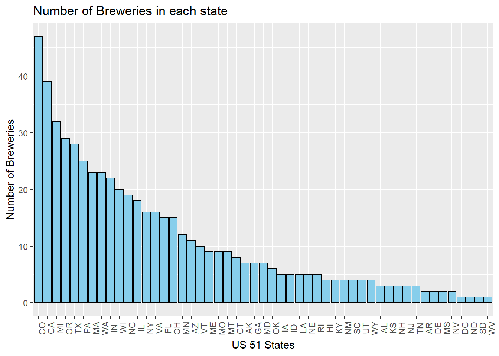
#heat map
breweries2 = read.csv("https://raw.githubusercontent.com/RashmiAPatel19/SMU_MSDS_6306_CaseStudy1_Spring2021/main/Breweries.csv")
lookup = data.frame(abb = state.abb, State = state.name) #make a dataframe of state names and abbreviations
colnames(breweries2)[4] = "abb" #change column name
breweries2$abb <- trimws(breweries2$abb, which = c("both")) #trim white space
breweries3 = merge(breweries2, lookup, by ="abb") #merge datasets
breweries_mapdata = count(breweries3, State) #count occurance of each state
colnames(breweries_mapdata)[2] = "Breweries" #change column name from "n" to "breweries"
breweries_mapdata$region <- tolower(breweries_mapdata$State) #create "region" column
breweries_mapdata = breweries_mapdata[-1] #remove states column
states <- map_data("state")
map.df <- merge(states, breweries_mapdata, by = "region", all.x = T)
map.df <- map.df[order(map.df$order),] #sort the data
ggplot(map.df, aes(x=long, y=lat, group=group)) +
geom_polygon(aes(fill=Breweries)) + geom_path() +
scale_fill_gradientn(colours=rev(heat.colors(10)),na.value="grey90") +
ggtitle("Breweries by State") +labs(x="Longitude", y="Latitude")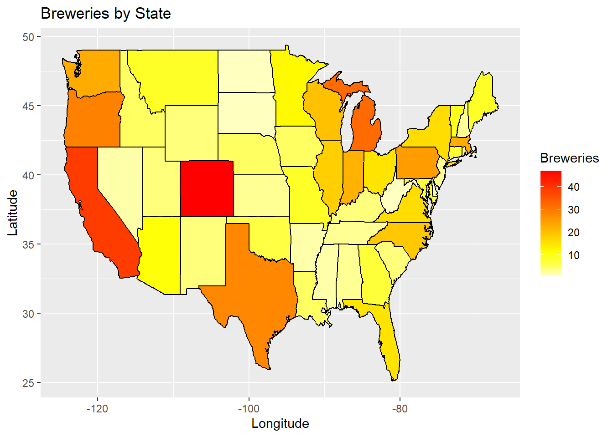
coord_map()## <ggproto object: Class CoordMap, Coord, gg>
## aspect: function
## backtransform_range: function
## clip: on
## default: FALSE
## distance: function
## is_free: function
## is_linear: function
## labels: function
## limits: list
## modify_scales: function
## orientation: NULL
## params: list
## projection: mercator
## range: function
## render_axis_h: function
## render_axis_v: function
## render_bg: function
## render_fg: function
## setup_data: function
## setup_layout: function
## setup_panel_guides: function
## setup_panel_params: function
## setup_params: function
## train_panel_guides: function
## transform: function
## super: <ggproto object: Class CoordMap, Coord, gg>Question 2: Merge beer data with the breweries data. Print the first 6 observations and the last six observations to check the merged file?
Full_data=merge(Beers,Breweries, by="Brewery_id")
head(Full_data)## Brewery_id Beer_Name Beer_ID ABV IBU Style Ounces Brewery_Name City State
## 1 1 Get Together 2692 0.045 50 American IPA 16 NorthGate Brewing Minneapolis MN
## 2 1 Maggie's Leap 2691 0.049 26 Milk / Sweet Stout 16 NorthGate Brewing Minneapolis MN
## 3 1 Wall's End 2690 0.048 19 English Brown Ale 16 NorthGate Brewing Minneapolis MN
## 4 1 Pumpion 2689 0.060 38 Pumpkin Ale 16 NorthGate Brewing Minneapolis MN
## 5 1 Stronghold 2688 0.060 25 American Porter 16 NorthGate Brewing Minneapolis MN
## 6 1 Parapet ESB 2687 0.056 47 Extra Special / Strong Bitter (ESB) 16 NorthGate Brewing Minneapolis MNtail(Full_data)## Brewery_id Beer_Name Beer_ID ABV IBU Style Ounces Brewery_Name City State
## 2405 556 Pilsner Ukiah 98 0.055 NA German Pilsener 12 Ukiah Brewing Company Ukiah CA
## 2406 557 Heinnieweisse Weissebier 52 0.049 NA Hefeweizen 12 Butternuts Beer and Ale Garrattsville NY
## 2407 557 Snapperhead IPA 51 0.068 NA American IPA 12 Butternuts Beer and Ale Garrattsville NY
## 2408 557 Moo Thunder Stout 50 0.049 NA Milk / Sweet Stout 12 Butternuts Beer and Ale Garrattsville NY
## 2409 557 Porkslap Pale Ale 49 0.043 NA American Pale Ale (APA) 12 Butternuts Beer and Ale Garrattsville NY
## 2410 558 Urban Wilderness Pale Ale 30 0.049 NA English Pale Ale 12 Sleeping Lady Brewing Company Anchorage AKdim(Full_data)## [1] 2410 10Types of craft beers
Full_data["Class"] = ifelse(str_detect(Full_data$Style,"IPA"),"IPA",
ifelse(str_detect(Full_data$Style,"Ale"),"Ale",
ifelse(str_detect(Full_data$Style,"Lager"),"Lager",
ifelse(str_detect(Full_data$Style,"Stout"),"Stout",
ifelse(str_detect(Full_data$Style,"Pilsner"),"Pilsner",
ifelse(str_detect(Full_data$Style,"Pilsener"),"Pilsner",
ifelse(str_detect(Full_data$Style,"Porter"),"Porter",
ifelse(str_detect(Full_data$Style,"APA"),"APA",
ifelse(str_detect(Full_data$Style,"Cider"),"Cider",
ifelse(str_detect(Full_data$Style,"Witbier"),"Witbier",
ifelse(str_detect(Full_data$Style,"Kölsch"),"Kölsch",
ifelse(str_detect(Full_data$Style,"Fruit"),"Fruit",
ifelse(str_detect(Full_data$Style,"Hefeweizen"),"Hefeweizen",
ifelse(str_detect(Full_data$Style,"Oktoberfest"),"Oktoberfest",
ifelse(str_detect(Full_data$Style,"Bitter"),"Bitter",
"Other")))))))))))))))
Full_data%>%ggplot(aes(x = Class, fill=Class))+geom_bar()+
ggtitle("Distribution of Beer Classes")+coord_flip()+xlab("Class of carft beers")+ylab("Count")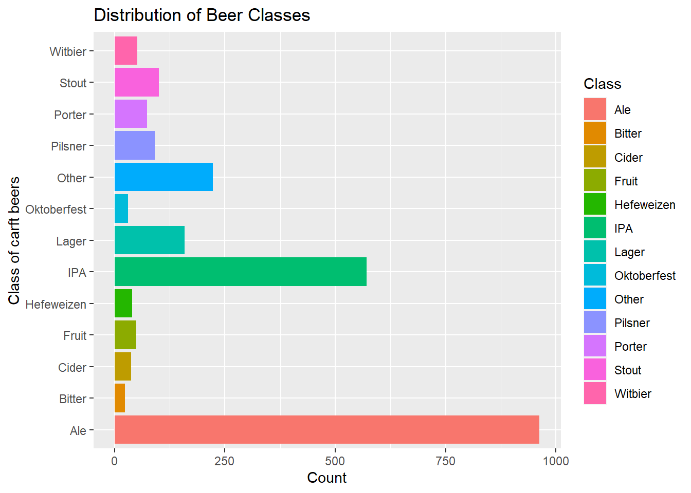
total_beer=length(Full_data$Class)
total_beer## [1] 2410total_IPA=sum(str_detect(Full_data$Class, "IPA"))
total_IPA## [1] 571total_Ale=sum(str_detect(Full_data$Class, "Ale"))
total_Ale## [1] 963total_IPA_Ale=((total_Ale+total_IPA)/total_beer)*100
total_IPA_Ale## [1] 63.651451)There are 100 different style of craft beers brewed in the United States. 2)Classes of Beer have style variants, i.e., Ales include English Pale, Irish Red, etc. 3)When grouped into classes, IPA’s And Ales account for 64% of all craft beers.
Question 3: “Address the missing values in each column?”
#find out how many missing values there are in each column
d1=sum(is.na(Full_data$ABV))
d1#ABV has 62 NA values## [1] 62d2=sum(is.na(Full_data$IBU))
d2#IBU has 1005 NA values## [1] 1005d3=sum(is.na(Full_data$Beer_Name))
d3## [1] 0d4=sum(is.na(Full_data$Style))
d4## [1] 0d5=sum(is.na(Full_data$Ounces))
d5## [1] 0d6=sum(is.na(Full_data$Brewery_Name))
d6## [1] 0d7=sum(is.na(Full_data$City))
d7## [1] 0d8=sum(is.na(Full_data$State))
d8## [1] 0missing_values=data.frame(column=c("ABV","IBU","Beer_Name","Style","Ounces","Brewery_Name","City","State" ), count=c(d1,d2,d3,d4,d5,d6,d7,d8))
missing_values## column count
## 1 ABV 62
## 2 IBU 1005
## 3 Beer_Name 0
## 4 Style 0
## 5 Ounces 0
## 6 Brewery_Name 0
## 7 City 0
## 8 State 0ggplot(missing_values, aes(x=column, y=count)) +
geom_segment( aes(x=column, xend=column, y=0, yend=count)) +
geom_point( size=3, color="red", fill=alpha("orange", 0.3), alpha=0.7, shape=21, stroke=2)+
labs(x="Columns in Beers And Breweries data", y="Count of Missing Values",title="Addressing Missing values in each column for beer and breweries data")+
theme(axis.text.x = element_text(angle = 90))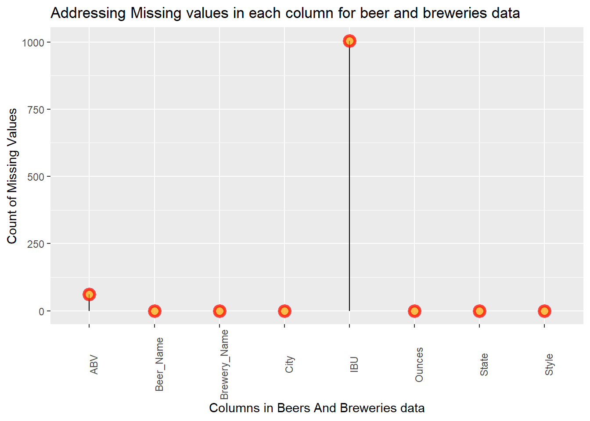
#Boxplot of IBU with NA values
NA_df_IBU=ggplot(Full_data,aes(y=reorder(Class,-IBU),x=IBU)) +
geom_boxplot(fill="pink",color="black") +
labs(y="Beer Class",x="International Bitterness Unit") +
ggtitle("International Bitterness Unit by class") +
theme(axis.text.x = element_text(angle = 90))
NA_df_IBU## Warning: Removed 1005 rows containing non-finite values (stat_boxplot).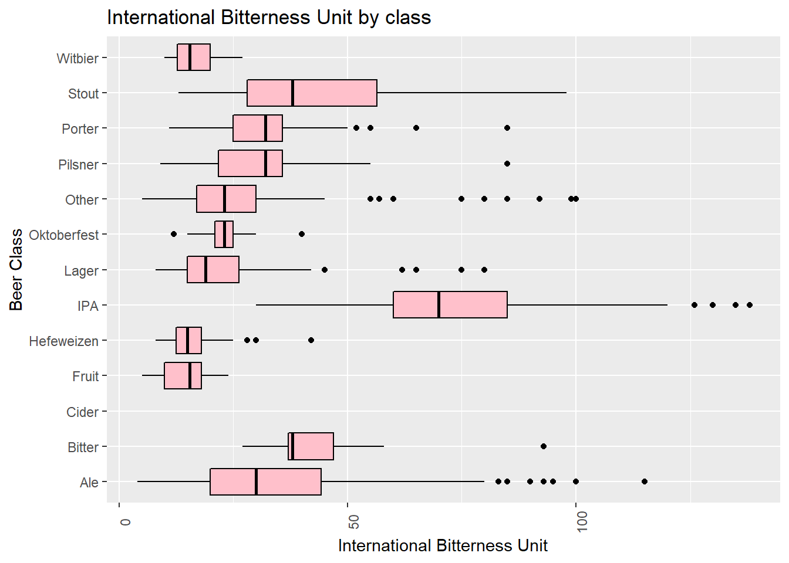
#Boxplot of IBV with NA values
NA_df_ABV=ggplot(Full_data,aes(y=reorder(Class,-ABV),x=ABV)) +
geom_boxplot(fill="dark green",color="black") +
labs(y="Beer Class",x="Alcohol by Volume") +
ggtitle("Alcohol by Volume by class") +
theme(axis.text.x = element_text(angle = 90))
NA_df_ABV## Warning: Removed 62 rows containing non-finite values (stat_boxplot).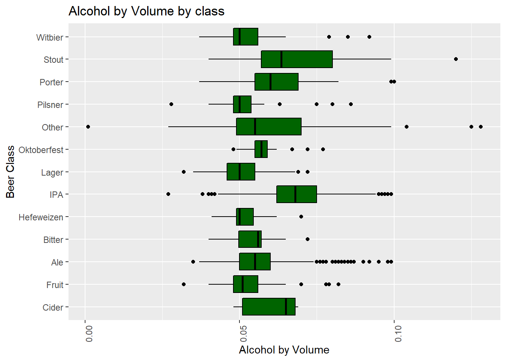
#make a new column where null ABV values now have ABV mean
#imp = imputed
Full_data$ABV.imp.mean =ifelse(is.na(Full_data$ABV), mean(Full_data$ABV, na.rm=TRUE), Full_data$ABV)
head(Full_data$ABV.imp.mean)## [1] 0.045 0.049 0.048 0.060 0.060 0.056sum(is.na(Full_data$ABV.imp.mean)) #no more NAs## [1] 0#make a new column where null IBU values now have IBU mean
Full_data$IBU.imp.mean = ifelse(is.na(Full_data$IBU), mean(Full_data$IBU, na.rm=TRUE), Full_data$IBU)
head(Full_data$IBU.imp.mean)## [1] 50 26 19 38 25 47sum(is.na(Full_data$IBU.imp.mean)) #no more NAs## [1] 0Question 4: “Compute and plot median alcohol content and international bitterness unit for each state?”
#compute medians
Median_df_imp=Full_data%>%group_by(State)%>%summarise(median_ABV_imp=median(ABV.imp.mean), median_IBU_imp=median(IBU.imp.mean))
Median_df_imp=as.data.frame(Median_df_imp)
head(Median_df_imp)## State median_ABV_imp median_IBU_imp
## 1 AK 0.05600000 42.71317
## 2 AL 0.06000000 42.85658
## 3 AR 0.05200000 42.71317
## 4 AZ 0.05800000 42.71317
## 5 CA 0.05800000 42.71317
## 6 CO 0.05977342 42.71317#plot medians for ABV without na values
Median_df_ABV=ggplot(Median_df_imp,aes(x=reorder(State,-median_ABV_imp),y=median_ABV_imp)) +
geom_col(fill="sky blue",color="black") +
labs(x="US 51 States",y="Median Alcohol Content by Volume") +
ggtitle("Median Alcohol Content by Volume in each state") +
theme(axis.text.x = element_text(angle = 90))
Median_df_ABV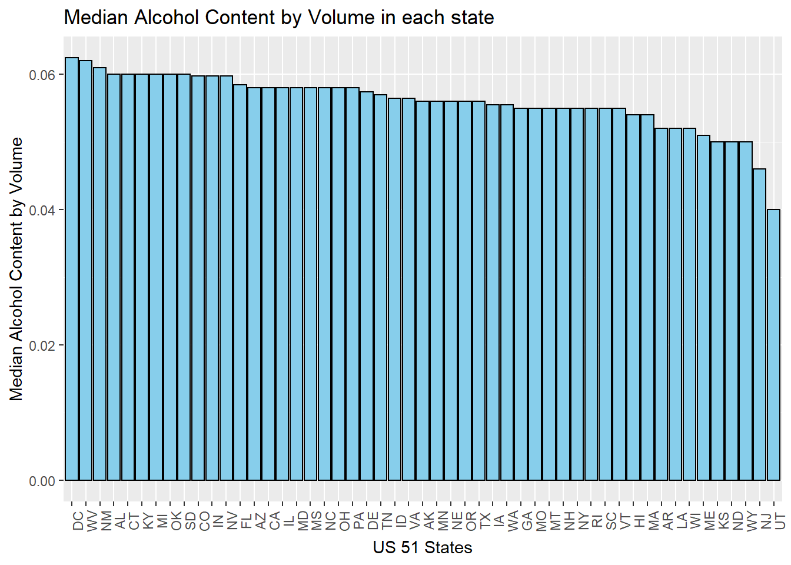
#plot medians for IBU without na values
Median_df_IBU=ggplot(Median_df_imp,aes(x=reorder(State,-median_IBU_imp),y=median_IBU_imp)) +
geom_col(fill="pink",color="black") +
labs(x="US 51 States",y="Median International Bitterness Unit") +
ggtitle("International Bitterness Unit in each state") +
theme(axis.text.x = element_text(angle = 90))
Median_df_IBU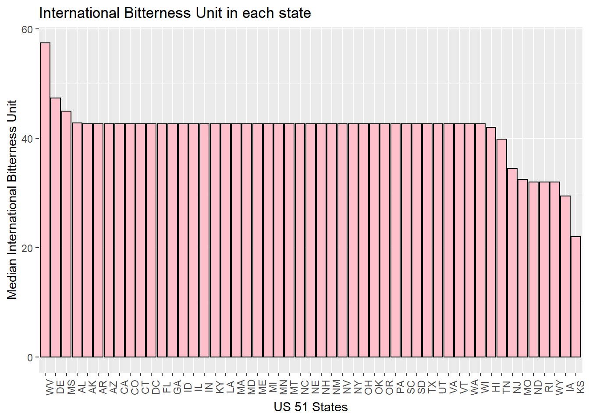 1) For almost all the states, we found median Alcohol by volume in between 5% to 6%. 2) Top 5 States with maximum median ABV are-DC, West Virginia,New Mexico, Alabama, and Connecticut. 3) Bottom 5 States with minimum median ABV are-Kansas, North Dakota, Wyoming, New Jersey and Utah. 4) For most of the states having sufficient large samples, the median of International Bitterness Unit(IBU) is in mid 40’s 5) Top 5 States with maximum median IBU are-West Virginia,Delaware, Mississippi, Alabama, and Arkansas. 6) Bottom 5 States with minimum median IBU are-North Dakota, Rhode Island, Wyoming, Iowa, Kansas.
Question 5: “Which state has the maximum alcoholic beer, and which has the most bitter beer?”
max.abv =Full_data %>% filter(ABV==max(Full_data$ABV,na.rm=TRUE)) %>% select(Beer_Name,ABV,Class,Style,State,Brewery_Name)
max.abv## Beer_Name ABV Class Style State Brewery_Name
## 1 Lee Hill Series Vol. 5 - Belgian Style Quadrupel Ale 0.128 Other Quadrupel (Quad) CO Upslope Brewing Company#Answer Colorado, Lee Hill Series Vol.5, ABV = 0.128, Upslope Brewing Company
max.ibu = Full_data %>% filter(IBU==max(Full_data$IBU,na.rm=TRUE)) %>% select(Beer_Name,IBU,Class,Style,State,Brewery_Name)
max.ibu## Beer_Name IBU Class Style State Brewery_Name
## 1 Bitter Bitch Imperial IPA 138 IPA American Double / Imperial IPA OR Astoria Brewing Company#Answer Oregon, Bitter Bitch Imperial, IBU = 138Question 6: “Comment on the summary statistics and distribution of the ABV variable.”
#with NAs
summary_ABV=summary(Full_data$ABV)#for ABV
summary_ABV## Min. 1st Qu. Median Mean 3rd Qu. Max. NA's
## 0.00100 0.05000 0.05600 0.05977 0.06700 0.12800 62ABV_histogram = Full_data %>% ggplot(aes(x = ABV, fill=Class)) +
geom_histogram( color = "black") +
ggtitle("Distribution of ABV with NA values")+labs(y="Count", x="Alcohol By Volume")
ABV_histogram## `stat_bin()` using `bins = 30`. Pick better value with `binwidth`.## Warning: Removed 62 rows containing non-finite values (stat_bin).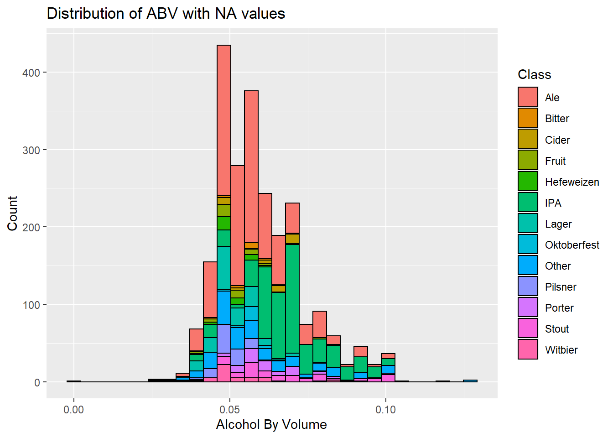
#without NAs
summary_imp_ABV=summary(Full_data$ABV.imp.mean)#for ABV
summary_imp_ABV## Min. 1st Qu. Median Mean 3rd Qu. Max.
## 0.00100 0.05000 0.05700 0.05977 0.06700 0.12800ABV_imp_histogram = Full_data %>% ggplot(aes(x = ABV.imp.mean, fill=Class)) +
geom_histogram(color="black") +
ggtitle("Distribution of ABV with imputed mean values instead of NA")+
labs(y="Count", x="Alcohol By Volume")
ABV_imp_histogram## `stat_bin()` using `bins = 30`. Pick better value with `binwidth`.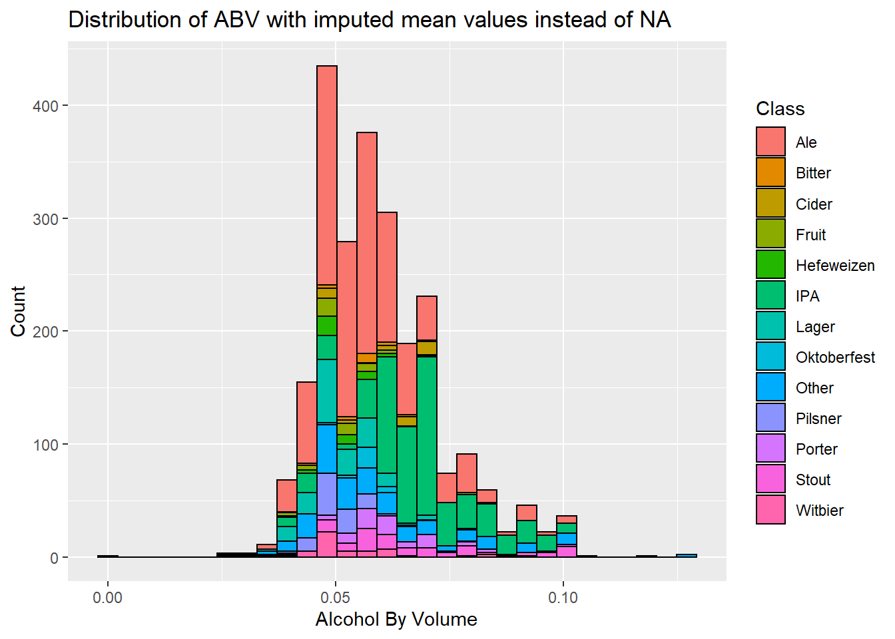
Question 7: "Is there a relationship between bitterness and alcohol content?
#with NAs
IBU_ABV=ggplot(Full_data,aes(x=ABV, y=IBU)) +
geom_point() +
geom_smooth(method="lm") +
ggtitle("Relationship between ABV and IBU with NA values")+
labs(x="Alcohol By Volume",y="International Bitterness Unit")
IBU_ABV## `geom_smooth()` using formula 'y ~ x'## Warning: Removed 1005 rows containing non-finite values (stat_smooth).## Warning: Removed 1005 rows containing missing values (geom_point).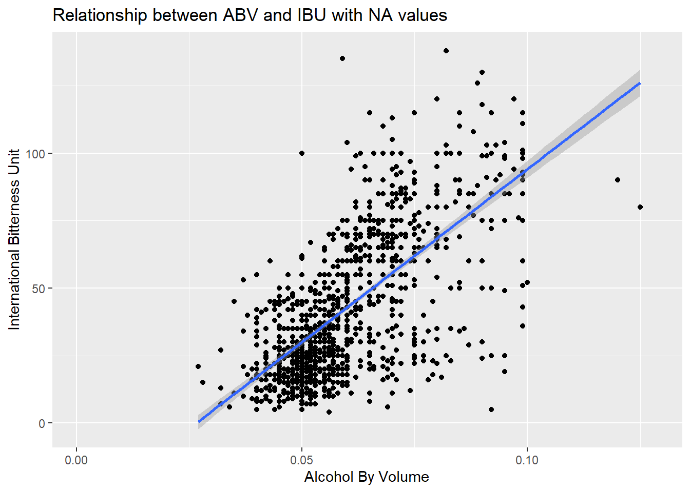
fit_NA=lm(ABV~IBU ,data=Full_data)
summary(fit_NA)##
## Call:
## lm(formula = ABV ~ IBU, data = Full_data)
##
## Residuals:
## Min 1Q Median 3Q Max
## -0.033288 -0.005946 -0.001595 0.004022 0.052006
##
## Coefficients:
## Estimate Std. Error t value Pr(>|t|)
## (Intercept) 4.493e-02 5.177e-04 86.79 <2e-16 ***
## IBU 3.508e-04 1.036e-05 33.86 <2e-16 ***
## ---
## Signif. codes: 0 '***' 0.001 '**' 0.01 '*' 0.05 '.' 0.1 ' ' 1
##
## Residual standard error: 0.01007 on 1403 degrees of freedom
## (1005 observations deleted due to missingness)
## Multiple R-squared: 0.4497, Adjusted R-squared: 0.4493
## F-statistic: 1147 on 1 and 1403 DF, p-value: < 2.2e-16#without NAs
imp_IBU_ABV=ggplot(Full_data,aes(x=ABV.imp.mean, y=IBU.imp.mean)) +
geom_point() +
geom_smooth(method="lm") +
ggtitle("Relationship between ABV and IBU with imputed mean values")+
labs(x="Alcohol By Volume",y="International Bitterness Unit")
imp_IBU_ABV## `geom_smooth()` using formula 'y ~ x'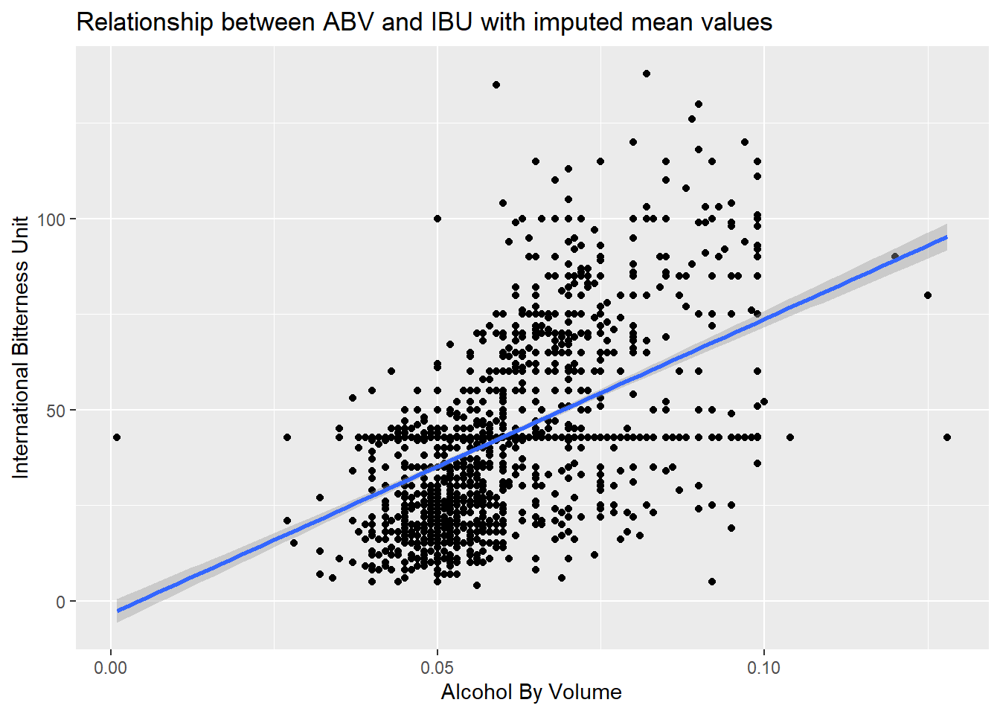
fit_withoutNA=lm(ABV.imp.mean~IBU.imp.mean ,data=Full_data)
summary(fit_withoutNA)##
## Call:
## lm(formula = ABV.imp.mean ~ IBU.imp.mean, data = Full_data)
##
## Residuals:
## Min 1Q Median 3Q Max
## -0.058773 -0.007346 -0.001753 0.005041 0.068227
##
## Coefficients:
## Estimate Std. Error t value Pr(>|t|)
## (Intercept) 4.479e-02 5.529e-04 81.01 <2e-16 ***
## IBU.imp.mean 3.508e-04 1.174e-05 29.88 <2e-16 ***
## ---
## Signif. codes: 0 '***' 0.001 '**' 0.01 '*' 0.05 '.' 0.1 ' ' 1
##
## Residual standard error: 0.01142 on 2408 degrees of freedom
## Multiple R-squared: 0.2704, Adjusted R-squared: 0.2701
## F-statistic: 892.5 on 1 and 2408 DF, p-value: < 2.2e-16Question 8: “Investigate the difference between IPAs and other Ales and use KNN for prediction.”
Full_data["Class2"] = ifelse(str_detect(Full_data$Style,"IPA"),"IPA",
ifelse(str_detect(Full_data$Style,"Ale"),"Ale",
ifelse(str_detect(Full_data$Style, "APA"), "Ale",
NA
)))
just_ales = na.omit(Full_data, cols = c("Class2"))
#head(just_ales)
#knn classifier
set.seed(877)
iterations = 100
numks = 60
splitPerc = .70
masterAcc = matrix(nrow = iterations, ncol = numks)
masterSens = matrix(nrow = iterations, ncol = numks)
masterSpec = matrix(nrow = iterations, ncol = numks)
for(j in 1:iterations)
{
accs = data.frame(accuracy = numeric(60), k = numeric(60))
trainIndices = sample(1:dim(just_ales)[1],round(splitPerc * dim(just_ales[1])))
train = just_ales[trainIndices,]
test = just_ales[-trainIndices,]
for(i in 1:numks)
{
classifications = knn(train[,c("IBU.imp.mean","ABV.imp.mean")],test[,c("IBU.imp.mean","ABV.imp.mean")],train$Class, prob = TRUE, k = i)
table(classifications,test$Class)
CM = confusionMatrix(table(classifications,test$Class))
masterAcc[j,i] = CM$overall[1]
masterSens[j,i] = mean(CM$byClass[1])
masterSpec[j,i] = mean(CM$byClass[2])
}
}
MeanAcc = colMeans(masterAcc)
MeanSens = colMeans(masterSens)
MeanSpec = colMeans(masterSpec)
plot(seq(1,numks,1),MeanAcc, type = "l",xlab ="Values of k tested", ylab="Mean Accuracy")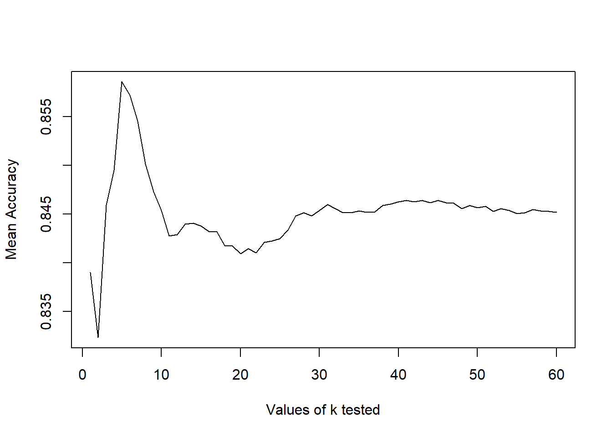
#which is the best k
which.max(MeanAcc)## [1] 5max(MeanAcc) #Accuracy with k=5## [1] 0.8585866MeanSens[5] #Sensitivity with k=5## [1] 0.8894598MeanSpec[5] #Specificity with k=5## [1] 0.8155353classifications = knn(train[,c("IBU.imp.mean","ABV.imp.mean")],test[,c("IBU.imp.mean","ABV.imp.mean")],train$Class, prob = TRUE, k = 4)
classifications## [1] Ale Ale Ale Ale Ale IPA IPA Ale Ale IPA IPA Ale Ale Ale Ale IPA IPA Ale IPA Ale Ale Ale IPA IPA Ale IPA IPA IPA IPA IPA Ale Ale IPA IPA
## [35] IPA Ale Ale IPA Ale Ale IPA Ale IPA Ale IPA IPA Ale Ale IPA IPA Ale IPA Ale Ale IPA IPA Ale Ale Ale Ale Ale IPA IPA IPA Ale Ale IPA Ale
## [69] Ale Ale Ale Ale Ale Ale Ale IPA IPA Ale Ale IPA IPA IPA Ale IPA IPA Ale Ale Ale Ale Ale Ale Ale Ale Ale Ale Ale IPA Ale Ale IPA Ale Ale
## [103] IPA Ale Ale IPA IPA IPA Ale Ale Ale IPA Ale IPA Ale Ale IPA Ale Ale Ale IPA Ale Ale Ale Ale Ale Ale Ale Ale Ale IPA Ale Ale IPA Ale IPA
## [137] Ale Ale IPA Ale Ale IPA IPA IPA IPA IPA Ale Ale IPA IPA Ale Ale IPA Ale Ale Ale Ale IPA IPA IPA IPA Ale IPA Ale IPA Ale Ale IPA Ale Ale
## [171] IPA Ale IPA IPA IPA Ale IPA Ale Ale Ale Ale Ale Ale IPA Ale IPA IPA Ale Ale IPA Ale Ale Ale IPA Ale IPA Ale IPA IPA Ale Ale IPA Ale Ale
## [205] Ale IPA Ale Ale IPA IPA IPA Ale Ale Ale IPA IPA IPA IPA IPA Ale Ale Ale Ale Ale Ale IPA Ale IPA IPA IPA Ale IPA Ale Ale IPA Ale Ale IPA
## [239] Ale IPA IPA Ale IPA IPA Ale IPA Ale Ale Ale IPA IPA IPA Ale Ale Ale Ale Ale IPA Ale IPA Ale Ale Ale Ale Ale IPA IPA Ale IPA Ale IPA Ale
## [273] Ale Ale Ale IPA Ale Ale IPA Ale IPA Ale IPA
## attr(,"prob")
## [1] 0.8571429 1.0000000 1.0000000 1.0000000 1.0000000 1.0000000 0.7500000 1.0000000 1.0000000 1.0000000 1.0000000 0.6000000 1.0000000
## [14] 1.0000000 0.8000000 0.6000000 1.0000000 1.0000000 1.0000000 1.0000000 1.0000000 0.7500000 0.6666667 0.8571429 0.8333333 1.0000000
## [27] 1.0000000 1.0000000 1.0000000 1.0000000 1.0000000 0.8000000 1.0000000 0.5714286 0.8888889 1.0000000 0.7500000 0.7500000 0.8333333
## [40] 1.0000000 1.0000000 1.0000000 1.0000000 1.0000000 0.8333333 1.0000000 1.0000000 0.8000000 1.0000000 0.8000000 0.7500000 0.7500000
## [53] 1.0000000 0.6000000 0.7500000 0.6000000 0.8000000 1.0000000 1.0000000 1.0000000 1.0000000 0.8333333 0.5555556 0.8333333 0.8000000
## [66] 1.0000000 1.0000000 1.0000000 1.0000000 1.0000000 1.0000000 1.0000000 1.0000000 0.8000000 1.0000000 1.0000000 0.7500000 1.0000000
## [79] 0.7500000 0.8888889 1.0000000 0.8000000 1.0000000 1.0000000 1.0000000 1.0000000 1.0000000 0.5882353 1.0000000 0.8000000 1.0000000
## [92] 1.0000000 1.0000000 0.8000000 0.8000000 1.0000000 1.0000000 1.0000000 1.0000000 1.0000000 1.0000000 1.0000000 0.7500000 1.0000000
## [105] 1.0000000 1.0000000 1.0000000 0.5000000 0.5000000 1.0000000 0.7142857 1.0000000 0.8571429 1.0000000 1.0000000 0.7500000 0.8000000
## [118] 1.0000000 0.5714286 0.8333333 0.7500000 1.0000000 1.0000000 1.0000000 0.5882353 0.5882353 0.5882353 0.5882353 1.0000000 1.0000000
## [131] 1.0000000 1.0000000 1.0000000 0.5000000 1.0000000 1.0000000 1.0000000 1.0000000 0.8888889 0.7142857 1.0000000 1.0000000 1.0000000
## [144] 0.8571429 1.0000000 0.5000000 1.0000000 1.0000000 0.7500000 0.7500000 1.0000000 0.7500000 0.8571429 1.0000000 1.0000000 0.7777778
## [157] 1.0000000 1.0000000 1.0000000 0.8571429 0.7500000 1.0000000 0.8000000 0.7500000 0.7500000 1.0000000 1.0000000 0.8000000 1.0000000
## [170] 0.7500000 0.8571429 1.0000000 1.0000000 1.0000000 0.7500000 0.7142857 0.7500000 0.8571429 1.0000000 0.8333333 1.0000000 0.7500000
## [183] 1.0000000 0.7142857 1.0000000 0.8750000 1.0000000 1.0000000 1.0000000 1.0000000 1.0000000 1.0000000 0.8000000 1.0000000 1.0000000
## [196] 0.8571429 0.5000000 0.8571429 1.0000000 1.0000000 1.0000000 0.7500000 1.0000000 1.0000000 1.0000000 0.8571429 1.0000000 1.0000000
## [209] 0.6000000 1.0000000 1.0000000 1.0000000 1.0000000 1.0000000 1.0000000 1.0000000 0.8750000 0.7500000 1.0000000 1.0000000 1.0000000
## [222] 1.0000000 1.0000000 1.0000000 1.0000000 0.8888889 0.6000000 0.8000000 1.0000000 0.7500000 1.0000000 1.0000000 0.8000000 0.5714286
## [235] 1.0000000 1.0000000 1.0000000 1.0000000 0.5000000 0.8000000 0.8000000 1.0000000 0.7272727 0.7500000 0.8000000 1.0000000 0.8333333
## [248] 1.0000000 0.8000000 1.0000000 1.0000000 0.5000000 1.0000000 0.5714286 1.0000000 1.0000000 1.0000000 0.7142857 0.7500000 0.8571429
## [261] 0.5000000 1.0000000 0.7500000 0.8000000 1.0000000 0.8000000 1.0000000 0.7500000 0.8000000 1.0000000 1.0000000 0.8571429 1.0000000
## [274] 0.5882353 0.5882353 0.7500000 1.0000000 0.6666667 1.0000000 0.5714286 1.0000000 1.0000000 1.0000000
## Levels: Ale IPAtable(classifications,test$Class)##
## classifications Ale IPA
## Ale 148 20
## IPA 21 94confusionMatrix(table(classifications,test$Class))## Confusion Matrix and Statistics
##
##
## classifications Ale IPA
## Ale 148 20
## IPA 21 94
##
## Accuracy : 0.8551
## 95% CI : (0.8086, 0.894)
## No Information Rate : 0.5972
## P-Value [Acc > NIR] : <2e-16
##
## Kappa : 0.6993
##
## Mcnemar's Test P-Value : 1
##
## Sensitivity : 0.8757
## Specificity : 0.8246
## Pos Pred Value : 0.8810
## Neg Pred Value : 0.8174
## Prevalence : 0.5972
## Detection Rate : 0.5230
## Detection Prevalence : 0.5936
## Balanced Accuracy : 0.8502
##
## 'Positive' Class : Ale
## classifications = knn(train[,c("IBU.imp.mean","ABV.imp.mean")],test[,c("IBU.imp.mean","ABV.imp.mean")],train$Class, prob = TRUE, k = 5)
classifications## [1] Ale Ale Ale Ale Ale IPA IPA Ale Ale IPA IPA Ale Ale Ale Ale IPA IPA Ale IPA Ale Ale Ale IPA IPA Ale IPA IPA IPA IPA IPA Ale Ale IPA IPA
## [35] IPA Ale Ale IPA Ale Ale IPA Ale IPA Ale IPA IPA Ale Ale IPA IPA Ale IPA Ale Ale IPA IPA Ale Ale Ale Ale Ale IPA IPA IPA Ale Ale IPA Ale
## [69] Ale Ale Ale Ale Ale Ale Ale IPA IPA Ale Ale IPA IPA IPA Ale IPA IPA Ale Ale Ale Ale Ale Ale Ale Ale Ale Ale Ale IPA Ale Ale IPA Ale Ale
## [103] IPA Ale Ale IPA IPA IPA IPA Ale Ale IPA Ale IPA Ale Ale IPA Ale Ale Ale IPA Ale Ale Ale Ale Ale Ale Ale Ale Ale IPA Ale Ale IPA Ale IPA
## [137] Ale Ale IPA Ale Ale IPA IPA IPA IPA IPA Ale Ale IPA IPA Ale Ale IPA Ale Ale Ale Ale IPA IPA IPA IPA Ale IPA Ale IPA Ale Ale IPA Ale Ale
## [171] IPA Ale IPA IPA IPA Ale IPA Ale Ale Ale Ale Ale Ale IPA Ale IPA IPA Ale Ale IPA Ale Ale Ale IPA Ale IPA IPA IPA IPA Ale Ale IPA Ale Ale
## [205] Ale IPA Ale Ale IPA IPA IPA Ale Ale Ale IPA IPA IPA IPA IPA Ale Ale Ale Ale Ale Ale IPA Ale IPA IPA IPA Ale IPA Ale Ale IPA Ale Ale IPA
## [239] IPA IPA IPA Ale IPA IPA Ale IPA Ale Ale Ale IPA IPA Ale Ale Ale Ale Ale Ale IPA Ale IPA IPA Ale Ale Ale Ale IPA IPA Ale IPA Ale IPA Ale
## [273] Ale Ale Ale IPA Ale Ale IPA Ale IPA Ale IPA
## attr(,"prob")
## [1] 0.8888889 1.0000000 1.0000000 1.0000000 0.9000000 0.8333333 0.8000000 1.0000000 1.0000000 0.8333333 0.8000000 0.6000000 1.0000000
## [14] 1.0000000 0.8000000 0.6000000 0.9285714 1.0000000 1.0000000 1.0000000 1.0000000 0.8000000 0.6666667 0.8571429 0.8333333 1.0000000
## [27] 1.0000000 1.0000000 1.0000000 1.0000000 1.0000000 0.8000000 1.0000000 0.5000000 0.8888889 1.0000000 0.8000000 0.6000000 0.8333333
## [40] 1.0000000 1.0000000 1.0000000 1.0000000 0.8750000 0.8333333 1.0000000 1.0000000 0.8000000 1.0000000 0.8000000 0.8000000 0.8000000
## [53] 1.0000000 0.5454545 0.8000000 0.6000000 0.8000000 1.0000000 1.0000000 1.0000000 1.0000000 0.8333333 0.5555556 0.8333333 0.8000000
## [66] 1.0000000 1.0000000 1.0000000 1.0000000 1.0000000 1.0000000 1.0000000 1.0000000 0.8000000 1.0000000 1.0000000 0.6000000 1.0000000
## [79] 0.8000000 0.8888889 1.0000000 0.8000000 0.9000000 1.0000000 1.0000000 1.0000000 1.0000000 0.5882353 0.7777778 0.8000000 1.0000000
## [92] 1.0000000 1.0000000 0.8000000 0.8000000 1.0000000 1.0000000 1.0000000 1.0000000 0.8000000 1.0000000 1.0000000 0.5714286 1.0000000
## [105] 1.0000000 1.0000000 1.0000000 0.7692308 0.7692308 1.0000000 0.7777778 1.0000000 0.8571429 1.0000000 1.0000000 0.8333333 0.8000000
## [118] 1.0000000 0.6250000 0.8333333 0.6666667 1.0000000 1.0000000 1.0000000 0.5882353 0.5882353 0.5882353 0.5882353 1.0000000 1.0000000
## [131] 1.0000000 1.0000000 1.0000000 0.6000000 0.6666667 1.0000000 1.0000000 1.0000000 0.8888889 0.7777778 1.0000000 1.0000000 1.0000000
## [144] 0.8571429 1.0000000 0.6000000 1.0000000 0.5000000 0.8000000 0.8571429 1.0000000 0.6666667 0.8571429 1.0000000 1.0000000 0.7777778
## [157] 1.0000000 1.0000000 1.0000000 0.8571429 0.6000000 1.0000000 0.8000000 0.6000000 0.7777778 1.0000000 1.0000000 0.8000000 1.0000000
## [170] 0.8000000 0.8750000 1.0000000 0.8888889 1.0000000 0.6666667 0.7500000 0.6000000 0.8571429 1.0000000 0.8333333 1.0000000 0.8000000
## [183] 1.0000000 0.5555556 0.9000000 0.8888889 0.8888889 1.0000000 1.0000000 1.0000000 1.0000000 1.0000000 0.8000000 1.0000000 1.0000000
## [196] 0.8571429 0.6000000 0.8750000 1.0000000 1.0000000 1.0000000 0.6000000 1.0000000 1.0000000 1.0000000 0.8571429 1.0000000 1.0000000
## [209] 0.6000000 1.0000000 1.0000000 0.9000000 1.0000000 1.0000000 1.0000000 1.0000000 0.8888889 0.8333333 1.0000000 1.0000000 1.0000000
## [222] 1.0000000 1.0000000 1.0000000 1.0000000 0.8888889 0.6000000 0.8000000 0.8888889 0.8571429 0.9000000 1.0000000 0.8000000 0.5714286
## [235] 1.0000000 1.0000000 1.0000000 1.0000000 0.6000000 0.8000000 0.8000000 1.0000000 0.7272727 0.8000000 0.8000000 1.0000000 0.8333333
## [248] 1.0000000 0.8000000 1.0000000 1.0000000 0.6250000 1.0000000 0.6666667 1.0000000 1.0000000 1.0000000 0.7777778 0.7777778 0.8750000
## [261] 0.6000000 1.0000000 0.8333333 0.8000000 1.0000000 0.8000000 1.0000000 0.8000000 0.8000000 1.0000000 0.9285714 0.8888889 1.0000000
## [274] 0.5882353 0.5882353 0.6000000 1.0000000 0.6666667 1.0000000 0.5714286 1.0000000 1.0000000 1.0000000
## Levels: Ale IPAtable(classifications,test$Class)##
## classifications Ale IPA
## Ale 146 19
## IPA 23 95confusionMatrix(table(classifications,test$Class))## Confusion Matrix and Statistics
##
##
## classifications Ale IPA
## Ale 146 19
## IPA 23 95
##
## Accuracy : 0.8516
## 95% CI : (0.8047, 0.8909)
## No Information Rate : 0.5972
## P-Value [Acc > NIR] : <2e-16
##
## Kappa : 0.6933
##
## Mcnemar's Test P-Value : 0.6434
##
## Sensitivity : 0.8639
## Specificity : 0.8333
## Pos Pred Value : 0.8848
## Neg Pred Value : 0.8051
## Prevalence : 0.5972
## Detection Rate : 0.5159
## Detection Prevalence : 0.5830
## Balanced Accuracy : 0.8486
##
## 'Positive' Class : Ale
## classifications = knn(train[,c("IBU.imp.mean","ABV.imp.mean")],test[,c("IBU.imp.mean","ABV.imp.mean")],train$Class, prob = TRUE, k = 6)
classifications## [1] Ale Ale Ale Ale Ale IPA IPA Ale Ale IPA IPA Ale Ale Ale Ale IPA IPA Ale IPA Ale Ale Ale IPA IPA Ale IPA IPA IPA IPA IPA Ale Ale IPA Ale
## [35] IPA Ale Ale IPA Ale Ale IPA Ale IPA Ale IPA IPA Ale Ale IPA IPA Ale IPA Ale Ale IPA IPA Ale Ale Ale Ale Ale IPA IPA IPA Ale Ale IPA Ale
## [69] Ale Ale Ale Ale Ale Ale Ale IPA IPA Ale Ale IPA IPA IPA Ale IPA IPA Ale Ale Ale Ale IPA Ale Ale Ale Ale Ale Ale IPA Ale Ale IPA Ale Ale
## [103] IPA Ale Ale IPA IPA IPA IPA Ale Ale IPA Ale IPA Ale Ale IPA Ale Ale Ale IPA Ale Ale Ale Ale Ale Ale Ale Ale Ale IPA Ale Ale IPA Ale IPA
## [137] Ale Ale IPA Ale Ale IPA IPA IPA IPA Ale Ale IPA IPA IPA Ale Ale IPA Ale Ale Ale Ale IPA IPA IPA IPA Ale IPA Ale IPA Ale Ale IPA Ale Ale
## [171] IPA Ale IPA IPA IPA Ale IPA Ale Ale Ale Ale Ale Ale Ale Ale IPA IPA Ale Ale IPA Ale Ale Ale IPA Ale IPA IPA IPA IPA Ale Ale IPA Ale Ale
## [205] Ale IPA Ale Ale IPA IPA IPA Ale Ale Ale IPA IPA IPA IPA IPA Ale Ale Ale Ale Ale Ale IPA IPA IPA IPA IPA Ale IPA Ale Ale IPA Ale Ale IPA
## [239] Ale IPA IPA Ale IPA IPA Ale IPA Ale Ale Ale IPA IPA Ale Ale Ale Ale Ale Ale IPA Ale IPA IPA Ale Ale Ale Ale IPA IPA Ale IPA Ale IPA Ale
## [273] Ale Ale Ale IPA Ale Ale IPA Ale IPA Ale IPA
## attr(,"prob")
## [1] 0.9000000 1.0000000 1.0000000 1.0000000 0.9000000 0.8333333 0.9000000 1.0000000 1.0000000 0.8333333 0.7500000 0.6666667 1.0000000
## [14] 1.0000000 0.7777778 0.5714286 0.9285714 0.8333333 1.0000000 1.0000000 1.0000000 0.8333333 0.6666667 0.8571429 0.8333333 1.0000000
## [27] 1.0000000 1.0000000 1.0000000 1.0000000 1.0000000 0.8000000 1.0000000 0.6000000 0.8888889 1.0000000 0.9000000 0.7142857 0.8333333
## [40] 1.0000000 1.0000000 1.0000000 1.0000000 0.8750000 0.8333333 1.0000000 1.0000000 0.8571429 1.0000000 0.9090909 0.8333333 0.9000000
## [53] 1.0000000 0.5454545 0.8333333 0.6666667 0.8181818 1.0000000 1.0000000 1.0000000 1.0000000 0.8333333 0.5555556 0.8333333 0.8181818
## [66] 1.0000000 1.0000000 1.0000000 1.0000000 1.0000000 1.0000000 1.0000000 1.0000000 0.8333333 1.0000000 1.0000000 0.7142857 1.0000000
## [79] 0.8333333 0.8888889 1.0000000 0.8181818 0.9000000 1.0000000 1.0000000 1.0000000 1.0000000 0.5882353 0.7500000 0.5555556 1.0000000
## [92] 1.0000000 1.0000000 0.8000000 0.8571429 1.0000000 1.0000000 1.0000000 1.0000000 0.9090909 1.0000000 1.0000000 0.5714286 1.0000000
## [105] 0.8181818 1.0000000 1.0000000 0.7692308 0.7692308 1.0000000 0.7272727 1.0000000 0.8571429 1.0000000 1.0000000 0.8333333 0.9090909
## [118] 0.9090909 0.6250000 0.8333333 0.6666667 0.8333333 1.0000000 1.0000000 0.5882353 0.5882353 0.5882353 0.5882353 1.0000000 1.0000000
## [131] 0.8571429 1.0000000 1.0000000 0.7777778 0.6666667 1.0000000 1.0000000 1.0000000 0.8888889 0.8000000 1.0000000 1.0000000 0.8333333
## [144] 0.8571429 1.0000000 0.5000000 1.0000000 0.5000000 0.8571429 0.8571429 1.0000000 0.7272727 0.8571429 1.0000000 1.0000000 0.7777778
## [157] 1.0000000 1.0000000 1.0000000 0.8571429 0.5714286 1.0000000 0.9090909 0.6666667 0.8181818 1.0000000 1.0000000 0.5714286 1.0000000
## [170] 0.5714286 0.8750000 1.0000000 0.9090909 1.0000000 0.6666667 0.7500000 0.5714286 0.8571429 1.0000000 0.8333333 1.0000000 0.9000000
## [183] 1.0000000 0.5454545 0.9000000 0.9090909 0.9090909 1.0000000 1.0000000 0.8333333 1.0000000 1.0000000 0.8333333 0.8571429 1.0000000
## [196] 0.8571429 0.7777778 0.8750000 1.0000000 1.0000000 1.0000000 0.5714286 1.0000000 1.0000000 1.0000000 0.7777778 1.0000000 1.0000000
## [209] 0.6666667 1.0000000 1.0000000 0.9000000 1.0000000 1.0000000 1.0000000 1.0000000 0.9090909 0.8333333 1.0000000 1.0000000 1.0000000
## [222] 1.0000000 1.0000000 1.0000000 1.0000000 0.8888889 0.5000000 0.8750000 0.9090909 0.8571429 0.9000000 0.8571429 0.7272727 0.5714286
## [235] 1.0000000 0.8333333 1.0000000 1.0000000 0.5000000 0.8333333 0.8333333 1.0000000 0.7272727 0.8333333 0.8000000 1.0000000 0.8333333
## [248] 1.0000000 0.7777778 1.0000000 1.0000000 0.6250000 1.0000000 0.7272727 1.0000000 1.0000000 1.0000000 0.8181818 0.8181818 0.8750000
## [261] 0.5714286 1.0000000 0.8333333 0.7777778 1.0000000 0.8333333 1.0000000 0.8333333 0.7272727 1.0000000 0.9285714 0.8888889 1.0000000
## [274] 0.5882353 0.5882353 0.6666667 1.0000000 0.6666667 1.0000000 0.5714286 0.8333333 1.0000000 1.0000000
## Levels: Ale IPAtable(classifications,test$Class)##
## classifications Ale IPA
## Ale 146 20
## IPA 23 94confusionMatrix(table(classifications,test$Class))## Confusion Matrix and Statistics
##
##
## classifications Ale IPA
## Ale 146 20
## IPA 23 94
##
## Accuracy : 0.8481
## 95% CI : (0.8008, 0.8878)
## No Information Rate : 0.5972
## P-Value [Acc > NIR] : <2e-16
##
## Kappa : 0.6855
##
## Mcnemar's Test P-Value : 0.7604
##
## Sensitivity : 0.8639
## Specificity : 0.8246
## Pos Pred Value : 0.8795
## Neg Pred Value : 0.8034
## Prevalence : 0.5972
## Detection Rate : 0.5159
## Detection Prevalence : 0.5866
## Balanced Accuracy : 0.8442
##
## 'Positive' Class : Ale
## classifications = knn(train[,c("IBU.imp.mean","ABV.imp.mean")],test[,c("IBU.imp.mean","ABV.imp.mean")],train$Class, prob = TRUE, k = 7)
classifications## [1] Ale Ale Ale Ale Ale IPA IPA Ale Ale IPA IPA Ale Ale Ale Ale IPA IPA Ale IPA Ale Ale Ale IPA IPA Ale IPA IPA IPA IPA IPA Ale Ale IPA Ale
## [35] IPA Ale Ale IPA Ale Ale IPA Ale IPA Ale IPA IPA Ale Ale IPA IPA Ale IPA Ale Ale IPA IPA Ale Ale Ale Ale Ale IPA IPA IPA Ale Ale IPA Ale
## [69] Ale Ale Ale Ale Ale Ale Ale IPA IPA Ale Ale IPA IPA IPA Ale IPA IPA Ale Ale Ale Ale IPA Ale Ale Ale Ale Ale Ale IPA Ale Ale IPA Ale Ale
## [103] IPA Ale Ale IPA IPA IPA IPA Ale Ale IPA Ale IPA Ale Ale IPA Ale Ale Ale IPA Ale Ale Ale Ale Ale Ale Ale Ale Ale IPA Ale Ale IPA Ale IPA
## [137] Ale Ale IPA Ale Ale IPA Ale IPA IPA Ale Ale Ale IPA IPA Ale Ale IPA Ale Ale Ale Ale IPA IPA IPA IPA Ale IPA Ale IPA Ale Ale IPA Ale Ale
## [171] IPA Ale IPA IPA IPA Ale IPA Ale Ale Ale Ale Ale Ale Ale Ale IPA IPA Ale Ale Ale Ale Ale Ale IPA Ale IPA IPA IPA IPA Ale Ale IPA Ale Ale
## [205] Ale IPA Ale Ale IPA IPA IPA Ale Ale Ale IPA IPA IPA IPA IPA Ale Ale Ale Ale Ale Ale IPA Ale IPA IPA IPA Ale IPA Ale Ale IPA Ale Ale IPA
## [239] Ale IPA IPA Ale IPA Ale Ale IPA Ale Ale Ale IPA IPA Ale Ale Ale Ale Ale Ale IPA Ale IPA IPA Ale Ale Ale Ale IPA IPA Ale IPA Ale IPA Ale
## [273] Ale Ale Ale IPA Ale Ale IPA Ale Ale Ale IPA
## attr(,"prob")
## [1] 0.9000000 1.0000000 1.0000000 1.0000000 0.9000000 0.8750000 0.9000000 1.0000000 1.0000000 0.7500000 0.7500000 0.7142857 1.0000000
## [14] 1.0000000 0.7777778 0.5714286 0.9285714 0.8571429 1.0000000 1.0000000 1.0000000 0.8571429 0.7500000 0.8571429 0.8000000 1.0000000
## [27] 1.0000000 1.0000000 1.0000000 1.0000000 1.0000000 0.8000000 1.0000000 0.6000000 0.8888889 1.0000000 0.9000000 0.7142857 0.8750000
## [40] 1.0000000 1.0000000 1.0000000 1.0000000 0.8750000 0.8571429 1.0000000 1.0000000 0.8750000 1.0000000 0.8461538 0.8571429 0.9000000
## [53] 1.0000000 0.6153846 0.8571429 0.7142857 0.8181818 1.0000000 1.0000000 1.0000000 1.0000000 0.8750000 0.5555556 0.8750000 0.8181818
## [66] 1.0000000 1.0000000 1.0000000 1.0000000 1.0000000 1.0000000 0.9000000 1.0000000 0.8571429 1.0000000 1.0000000 0.7142857 1.0000000
## [79] 0.8571429 0.8888889 1.0000000 0.8461538 0.9000000 1.0000000 1.0000000 1.0000000 1.0000000 0.5882353 0.6923077 0.5555556 1.0000000
## [92] 1.0000000 1.0000000 0.8000000 0.8571429 1.0000000 1.0000000 1.0000000 1.0000000 0.8461538 1.0000000 1.0000000 0.5714286 1.0000000
## [105] 0.7692308 1.0000000 0.8750000 0.7692308 0.7692308 1.0000000 0.6666667 1.0000000 0.8571429 1.0000000 1.0000000 0.8750000 0.7692308
## [118] 0.8461538 0.7272727 0.7500000 0.6666667 0.8571429 1.0000000 1.0000000 0.5882353 0.5882353 0.5882353 0.5882353 0.7272727 1.0000000
## [131] 0.8571429 1.0000000 1.0000000 0.7777778 0.6666667 1.0000000 1.0000000 1.0000000 0.8888889 0.8181818 1.0000000 1.0000000 0.5384615
## [144] 0.8571429 0.8823529 0.5714286 1.0000000 0.5000000 0.8571429 0.8571429 1.0000000 0.6923077 0.8571429 1.0000000 1.0000000 0.7777778
## [157] 1.0000000 1.0000000 0.9230769 0.8571429 0.5714286 1.0000000 0.8461538 0.6666667 0.6923077 1.0000000 1.0000000 0.5714286 1.0000000
## [170] 0.5714286 0.8750000 1.0000000 0.9166667 0.8823529 0.5714286 0.7500000 0.5714286 0.8571429 1.0000000 0.8571429 1.0000000 0.9000000
## [183] 1.0000000 0.5384615 0.9000000 0.9090909 0.8461538 1.0000000 0.8888889 0.5384615 1.0000000 0.8888889 0.8571429 0.8571429 1.0000000
## [196] 0.8571429 0.7777778 0.8750000 1.0000000 1.0000000 1.0000000 0.5714286 1.0000000 1.0000000 1.0000000 0.7777778 1.0000000 1.0000000
## [209] 0.5714286 1.0000000 1.0000000 0.9000000 1.0000000 1.0000000 1.0000000 1.0000000 0.9230769 0.8571429 1.0000000 1.0000000 1.0000000
## [222] 1.0000000 1.0000000 1.0000000 1.0000000 0.8888889 0.5714286 0.8750000 0.9230769 0.8571429 0.9000000 0.8571429 0.7692308 0.5714286
## [235] 1.0000000 0.8571429 1.0000000 1.0000000 0.5714286 0.8571429 0.8571429 1.0000000 0.7272727 0.5384615 0.8000000 0.9230769 0.8571429
## [248] 1.0000000 0.7777778 1.0000000 1.0000000 0.6250000 1.0000000 0.6153846 1.0000000 0.8571429 1.0000000 0.8461538 0.8461538 0.8750000
## [261] 0.5714286 1.0000000 0.8750000 0.7777778 1.0000000 0.8571429 1.0000000 0.8571429 0.7692308 1.0000000 0.9285714 0.8888889 1.0000000
## [274] 0.5882353 0.5882353 0.8181818 1.0000000 0.7142857 1.0000000 0.5714286 0.5384615 1.0000000 1.0000000
## Levels: Ale IPAtable(classifications,test$Class)##
## classifications Ale IPA
## Ale 151 21
## IPA 18 93confusionMatrix(table(classifications,test$Class))## Confusion Matrix and Statistics
##
##
## classifications Ale IPA
## Ale 151 21
## IPA 18 93
##
## Accuracy : 0.8622
## 95% CI : (0.8165, 0.9001)
## No Information Rate : 0.5972
## P-Value [Acc > NIR] : <2e-16
##
## Kappa : 0.7123
##
## Mcnemar's Test P-Value : 0.7488
##
## Sensitivity : 0.8935
## Specificity : 0.8158
## Pos Pred Value : 0.8779
## Neg Pred Value : 0.8378
## Prevalence : 0.5972
## Detection Rate : 0.5336
## Detection Prevalence : 0.6078
## Balanced Accuracy : 0.8546
##
## 'Positive' Class : Ale
## Full_data %>% filter(Class == "IPA" | Class == "Ale") %>% ggplot(mapping=aes(y=IBU, x=ABV,color=Class)) + geom_point()+ labs(y="International Bitterness Unit",x="Alcohol Content by Volume",title="Correlation between ABV and IBU")## Warning: Removed 590 rows containing missing values (geom_point).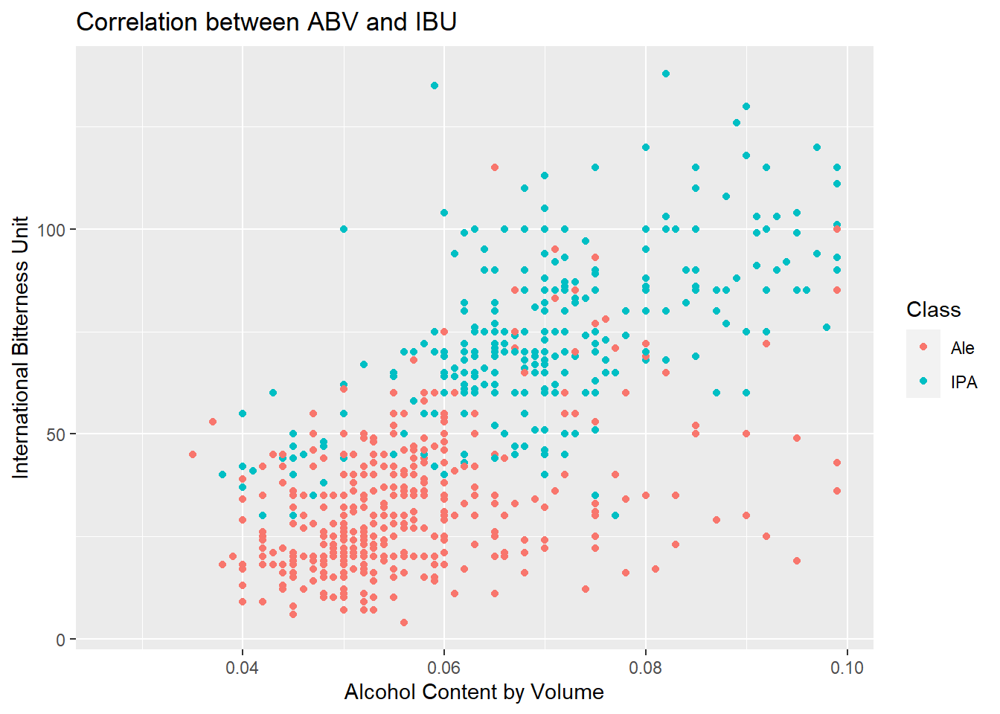 1) We trained the data using K-nearest neighbor classifier with 100 iterations and then tested the model for highest accuracy. 2) A k-nearest model (with NA’s omitted) at k=5 gives an accuracy of 85%, which means the number of beers correctly classified as either IPA or other Ale. 3)The model has a sensitivity of over 88%–which means over 88% of the Ales were identified correctly. 4) Finally, the model has a specificity of over 81%–which means over 81% of the IPA’s were identified correctly.
!!!EXTRA INSIGHTS Insight 1: “ABV and IBU relationship for IPA and Ale”
Full_data %>% filter(Class == "IPA" | Class == "Ale") %>% ggplot(mapping=aes(y=IBU, x=ABV,color=Class)) + geom_point()+ geom_smooth(method="lm",se=FALSE,size=1)+ labs(title="Correlation between ABV and IBU")## `geom_smooth()` using formula 'y ~ x'## Warning: Removed 590 rows containing non-finite values (stat_smooth).## Warning: Removed 590 rows containing missing values (geom_point).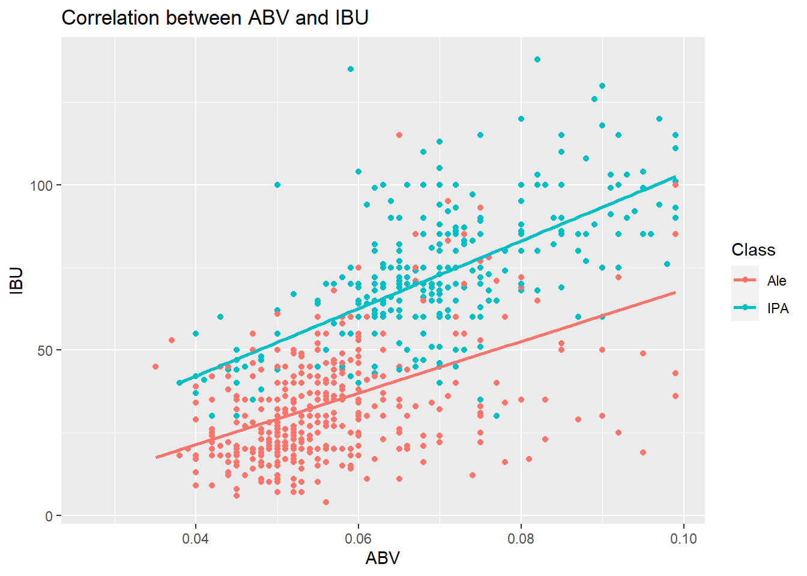
ipa=Full_data %>% filter(Class == "IPA")
ipa## Brewery_id Beer_Name Beer_ID ABV IBU Style Ounces Brewery_Name
## 1 1 Get Together 2692 0.045 50 American IPA 16 NorthGate Brewing
## 2 2 Citra Ass Down 2686 0.080 68 American Double / Imperial IPA 16 Against the Grain Brewery
## 3 2 Rico Sauvin 2678 0.076 68 American Double / Imperial IPA 16 Against the Grain Brewery
## 4 2 Pile of Face 2675 0.060 65 American IPA 16 Against the Grain Brewery
## 5 4 Habitus (2014) 2668 0.080 100 American Double / Imperial IPA 16 Mike Hess Brewing Company
## 6 4 Solis 2667 0.075 85 American IPA 16 Mike Hess Brewing Company
## 7 4 Habitus 2664 0.080 100 American Double / Imperial IPA 16 Mike Hess Brewing Company
## 8 5 Villager 2658 0.063 42 American IPA 12 Fort Point Beer Company
## 9 6 HopArt 2653 0.077 NA American IPA 16 COAST Brewing Company
## 10 6 Boy King 2652 0.097 NA American Double / Imperial IPA 16 COAST Brewing Company
## 11 7 Rumble 2647 0.071 NA American IPA 12 Great Divide Brewing Company
## 12 7 Lasso 2645 0.050 NA American IPA 12 Great Divide Brewing Company
## 13 7 Titan IPA 2642 0.071 NA American IPA 12 Great Divide Brewing Company
## 14 8 Reactor 2448 0.070 NA American IPA 16 Tapistry Brewing
## 15 9 Ryecoe 2469 0.062 NA American IPA 16 Big Lake Brewing
## 16 11 Linnaeus Mango IPA 2597 0.060 NA American IPA 16 Brewery Vivant
## 17 11 Barrel Aged Triomphe 2541 0.065 NA Belgian IPA 16 Brewery Vivant
## 18 11 Nuit Serpent 2498 0.050 NA Belgian IPA 16 Brewery Vivant
## 19 11 The Grand Army 2476 0.055 NA Belgian IPA 16 Brewery Vivant
## 20 11 BRIPA 2092 0.062 NA Belgian IPA 16 Brewery Vivant
## 21 11 W.I.P.A Snappa 2086 0.053 NA Belgian IPA 16 Brewery Vivant
## 22 11 Tree Bucket 1947 0.093 NA Belgian IPA 16 Brewery Vivant
## 23 11 Trebuchet Double IPA 1443 0.093 NA American Double / Imperial IPA 16 Brewery Vivant
## 24 11 Trebuchet Double IPA (2012) 669 0.097 NA Belgian IPA 16 Brewery Vivant
## 25 11 Triomphe 384 0.065 NA Belgian IPA 16 Brewery Vivant
## 26 12 Mind's Eye PA 1402 0.067 74 American IPA 16 Petoskey Brewing
## 27 13 Nordskye 2634 0.048 47 American IPA 12 Blackrocks Brewery
## 28 13 51K IPA 1481 0.070 51 American IPA 12 Blackrocks Brewery
## 29 14 98 Problems (Cuz A Hop Ain't One) 2630 0.065 65 American IPA 12 Perrin Brewing Company
## 30 14 Grapefruit IPA 2628 0.050 35 American IPA 12 Perrin Brewing Company
## 31 15 Train Hopper 2627 0.058 72 American IPA 12 Witch's Hat Brewing Company
## 32 16 Centennial IPA 1565 0.072 65 American IPA 12 Founders Brewing Company
## 33 16 All Day IPA 1223 0.047 42 American IPA 12 Founders Brewing Company
## 34 17 Half Cycle IPA 1610 0.060 104 American IPA 16 Flat 12 Bierwerks
## 35 18 Overlord Imperial IPA 1449 0.085 115 American Double / Imperial IPA 16 Tin Man Brewing Company
## 36 18 Alloy 951 0.058 36 American IPA 16 Tin Man Brewing Company
## 37 21 Thai.p.a 2618 0.070 46 American IPA 16 Bare Hands Brewery
## 38 23 The 26th 2611 0.060 NA American IPA 16 Four Fathers Brewing
## 39 23 The Gadget 2610 0.064 90 American IPA 16 Four Fathers Brewing
## 40 25 Hopkick Dropkick 2471 0.099 115 American Double / Imperial IPA 12 Burn 'Em Brewing
## 41 25 3:33 Black IPA 2158 0.072 86 American IPA 16 Burn 'Em Brewing
## 42 25 MCA 2072 0.068 NA American IPA 16 Burn 'Em Brewing
## 43 26 Fistful Of Hops Red 2001 0.064 75 American IPA 16 Sun King Brewing Company
## 44 26 Fistful of Hops Orange 2000 0.063 75 American IPA 16 Sun King Brewing Company
## 45 26 Fistful Of Hops Blue 1999 0.064 75 American IPA 16 Sun King Brewing Company
## 46 26 Fistful of Hops Green 1996 0.064 75 American IPA 16 Sun King Brewing Company
## 47 26 30 Min Coma 1948 NA NA Belgian IPA 16 Sun King Brewing Company
## 48 26 Grapefruit Jungle (GFJ) 1420 0.075 77 American IPA 16 Sun King Brewing Company
## 49 26 Isis 651 0.091 91 American Double / Imperial IPA 16 Sun King Brewing Company
## 50 26 Grapefruit Jungle (GFJ) (2011) 532 0.075 77 American IPA 16 Sun King Brewing Company
## 51 27 White Reaper 2432 0.070 61 Belgian IPA 16 Evil Czech Brewery
## 52 28 Galaxyfest 2603 0.065 NA American IPA 16 450 North Brewing Company
## 53 28 Citrafest 2602 0.050 45 American IPA 16 450 North Brewing Company
## 54 28 Scarecrow 2219 0.069 65 American IPA 16 450 North Brewing Company
## 55 30 Gone A-Rye 2600 0.085 90 American Double / Imperial IPA 16 Cedar Creek Brewery
## 56 30 Dankosaurus 2052 0.068 70 American IPA 16 Cedar Creek Brewery
## 57 31 Count Hopula (Vault Series) 2063 0.091 99 American Double / Imperial IPA 16 SanTan Brewing Company
## 58 31 Supermonk I.P.A. 1299 0.065 NA Belgian IPA 12 SanTan Brewing Company
## 59 31 Hop Shock IPA 1071 0.070 85 American IPA 12 SanTan Brewing Company
## 60 31 Hop Shock IPA (2010) 317 0.070 85 American IPA 12 SanTan Brewing Company
## 61 32 Heavy Lifting 2596 0.062 80 American IPA 12 Boulevard Brewing Company
## 62 33 JP's Ould Sod Irish Red IPA 1254 0.060 NA American IPA 12 James Page Brewing Company
## 63 34 South Bay Session IPA 2034 0.050 NA American IPA 16 The Dudes' Brewing Company
## 64 34 Double Trunk 1561 0.099 101 American Double / Imperial IPA 16 The Dudes' Brewing Company
## 65 35 Grapefruit Sculpin 2593 0.070 NA American IPA 12 Ballast Point Brewing Company
## 66 35 Even Keel 2105 0.038 40 American IPA 12 Ballast Point Brewing Company
## 67 35 Big Eye India Pale Ale 1400 0.070 75 American IPA 12 Ballast Point Brewing Company
## 68 35 Sculpin IPA 1018 0.070 70 American IPA 12 Ballast Point Brewing Company
## 69 36 Liberty Ale 2592 0.059 NA American IPA 12 Anchor Brewing Company
## 70 36 IPA 2578 0.065 NA American IPA 12 Anchor Brewing Company
## 71 38 Raja 2589 0.080 NA American Double / Imperial IPA 12 Avery Brewing Company
## City State Class ABV.imp.mean IBU.imp.mean Class2
## 1 Minneapolis MN IPA 0.04500000 50.00000 IPA
## 2 Louisville KY IPA 0.08000000 68.00000 IPA
## 3 Louisville KY IPA 0.07600000 68.00000 IPA
## 4 Louisville KY IPA 0.06000000 65.00000 IPA
## 5 San Diego CA IPA 0.08000000 100.00000 IPA
## 6 San Diego CA IPA 0.07500000 85.00000 IPA
## 7 San Diego CA IPA 0.08000000 100.00000 IPA
## 8 San Francisco CA IPA 0.06300000 42.00000 IPA
## 9 Charleston SC IPA 0.07700000 42.71317 IPA
## 10 Charleston SC IPA 0.09700000 42.71317 IPA
## 11 Denver CO IPA 0.07100000 42.71317 IPA
## 12 Denver CO IPA 0.05000000 42.71317 IPA
## 13 Denver CO IPA 0.07100000 42.71317 IPA
## 14 Bridgman MI IPA 0.07000000 42.71317 IPA
## 15 Holland MI IPA 0.06200000 42.71317 IPA
## 16 Grand Rapids MI IPA 0.06000000 42.71317 IPA
## 17 Grand Rapids MI IPA 0.06500000 42.71317 IPA
## 18 Grand Rapids MI IPA 0.05000000 42.71317 IPA
## 19 Grand Rapids MI IPA 0.05500000 42.71317 IPA
## 20 Grand Rapids MI IPA 0.06200000 42.71317 IPA
## 21 Grand Rapids MI IPA 0.05300000 42.71317 IPA
## 22 Grand Rapids MI IPA 0.09300000 42.71317 IPA
## 23 Grand Rapids MI IPA 0.09300000 42.71317 IPA
## 24 Grand Rapids MI IPA 0.09700000 42.71317 IPA
## 25 Grand Rapids MI IPA 0.06500000 42.71317 IPA
## 26 Petoskey MI IPA 0.06700000 74.00000 IPA
## 27 Marquette MI IPA 0.04800000 47.00000 IPA
## 28 Marquette MI IPA 0.07000000 51.00000 IPA
## 29 Comstock Park MI IPA 0.06500000 65.00000 IPA
## 30 Comstock Park MI IPA 0.05000000 35.00000 IPA
## 31 South Lyon MI IPA 0.05800000 72.00000 IPA
## 32 Grand Rapids MI IPA 0.07200000 65.00000 IPA
## 33 Grand Rapids MI IPA 0.04700000 42.00000 IPA
## 34 Indianapolis IN IPA 0.06000000 104.00000 IPA
## 35 Evansville IN IPA 0.08500000 115.00000 IPA
## 36 Evansville IN IPA 0.05800000 36.00000 IPA
## 37 Granger IN IPA 0.07000000 46.00000 IPA
## 38 Valparaiso IN IPA 0.06000000 42.71317 IPA
## 39 Valparaiso IN IPA 0.06400000 90.00000 IPA
## 40 Michigan City IN IPA 0.09900000 115.00000 IPA
## 41 Michigan City IN IPA 0.07200000 86.00000 IPA
## 42 Michigan City IN IPA 0.06800000 42.71317 IPA
## 43 Indianapolis IN IPA 0.06400000 75.00000 IPA
## 44 Indianapolis IN IPA 0.06300000 75.00000 IPA
## 45 Indianapolis IN IPA 0.06400000 75.00000 IPA
## 46 Indianapolis IN IPA 0.06400000 75.00000 IPA
## 47 Indianapolis IN IPA 0.05977342 42.71317 IPA
## 48 Indianapolis IN IPA 0.07500000 77.00000 IPA
## 49 Indianapolis IN IPA 0.09100000 91.00000 IPA
## 50 Indianapolis IN IPA 0.07500000 77.00000 IPA
## 51 Mishawaka IN IPA 0.07000000 61.00000 IPA
## 52 Columbus IN IPA 0.06500000 42.71317 IPA
## 53 Columbus IN IPA 0.05000000 45.00000 IPA
## 54 Columbus IN IPA 0.06900000 65.00000 IPA
## 55 Seven Points TX IPA 0.08500000 90.00000 IPA
## 56 Seven Points TX IPA 0.06800000 70.00000 IPA
## 57 Chandler AZ IPA 0.09100000 99.00000 IPA
## 58 Chandler AZ IPA 0.06500000 42.71317 IPA
## 59 Chandler AZ IPA 0.07000000 85.00000 IPA
## 60 Chandler AZ IPA 0.07000000 85.00000 IPA
## 61 Kansas City MO IPA 0.06200000 80.00000 IPA
## 62 Stevens Point WI IPA 0.06000000 42.71317 IPA
## 63 Torrance CA IPA 0.05000000 42.71317 IPA
## 64 Torrance CA IPA 0.09900000 101.00000 IPA
## 65 San Diego CA IPA 0.07000000 42.71317 IPA
## 66 San Diego CA IPA 0.03800000 40.00000 IPA
## 67 San Diego CA IPA 0.07000000 75.00000 IPA
## 68 San Diego CA IPA 0.07000000 70.00000 IPA
## 69 San Francisco CA IPA 0.05900000 42.71317 IPA
## 70 San Francisco CA IPA 0.06500000 42.71317 IPA
## 71 Boulder CO IPA 0.08000000 42.71317 IPA
## [ reached 'max' / getOption("max.print") -- omitted 500 rows ]fit_ipa=lm(ABV~IBU,data=ipa)
summary(fit_ipa)##
## Call:
## lm(formula = ABV ~ IBU, data = ipa)
##
## Residuals:
## Min 1Q Median 3Q Max
## -0.035112 -0.005484 -0.000441 0.005594 0.027253
##
## Coefficients:
## Estimate Std. Error t value Pr(>|t|)
## (Intercept) 0.0406499 0.0018115 22.44 <2e-16 ***
## IBU 0.0003960 0.0000243 16.30 <2e-16 ***
## ---
## Signif. codes: 0 '***' 0.001 '**' 0.01 '*' 0.05 '.' 0.1 ' ' 1
##
## Residual standard error: 0.009391 on 390 degrees of freedom
## (179 observations deleted due to missingness)
## Multiple R-squared: 0.4051, Adjusted R-squared: 0.4036
## F-statistic: 265.6 on 1 and 390 DF, p-value: < 2.2e-16ale=Full_data %>% filter(Class == "Ale")
ale## Brewery_id Beer_Name Beer_ID ABV IBU Style Ounces Brewery_Name
## 1 1 Wall's End 2690 0.048 19 English Brown Ale 16 NorthGate Brewing
## 2 1 Pumpion 2689 0.060 38 Pumpkin Ale 16 NorthGate Brewing
## 3 2 A Beer 2683 0.042 42 American Pale Ale (APA) 16 Against the Grain Brewery
## 4 2 Flesh Gourd'n 2681 0.066 21 Pumpkin Ale 16 Against the Grain Brewery
## 5 2 Sho'nuff 2680 0.040 13 Belgian Pale Ale 16 Against the Grain Brewery
## 6 2 Coq de la Marche 2677 0.051 38 Saison / Farmhouse Ale 16 Against the Grain Brewery
## 7 2 Kamen Knuddeln 2676 0.065 NA American Wild Ale 16 Against the Grain Brewery
## 8 2 The Brown Note 2674 0.050 20 English Brown Ale 16 Against the Grain Brewery
## 9 4 Jucundus 2666 0.060 24 Wheat Ale 16 Mike Hess Brewing Company
## 10 4 Grazias 2663 0.063 30 Cream Ale 16 Mike Hess Brewing Company
## 11 5 Park 2661 0.047 19 American Pale Wheat Ale 12 Fort Point Beer Company
## 12 5 Westfalia 2660 0.056 16 American Amber / Red Ale 12 Fort Point Beer Company
## 13 6 Rye Knot 2656 0.062 NA American Brown Ale 12 COAST Brewing Company
## 14 6 Dead Arm 2655 0.060 NA American Pale Ale (APA) 12 COAST Brewing Company
## 15 7 Denver Pale Ale (Artist Series No. 1) 2650 0.050 NA American Pale Ale (APA) 12 Great Divide Brewing Company
## 16 7 Hibernation Ale 2649 0.087 NA Old Ale 12 Great Divide Brewing Company
## 17 7 Whitewater 2648 0.061 NA American Pale Wheat Ale 12 Great Divide Brewing Company
## 18 7 Colette 2643 0.073 NA Saison / Farmhouse Ale 12 Great Divide Brewing Company
## 19 10 G. B. Russoâ\200\231s Italian Pistachio Pale Ale 2638 0.052 NA American Pale Ale (APA) 16 The Mitten Brewing Company
## 20 11 Belfort 2637 0.067 NA Saison / Farmhouse Ale 16 Brewery Vivant
## 21 11 Star Runner 2636 0.060 NA Belgian Pale Ale 16 Brewery Vivant
## 22 11 Tropical Saison 2500 0.065 NA Saison / Farmhouse Ale 16 Brewery Vivant
## 23 11 Paris 2481 0.090 NA Saison / Farmhouse Ale 16 Brewery Vivant
## 24 11 Acidulated Trip 2467 0.059 NA Saison / Farmhouse Ale 16 Brewery Vivant
## 25 11 Sous Chef 2433 0.082 NA Belgian Strong Pale Ale 16 Brewery Vivant
## 26 11 Psychopomp 2416 0.062 NA Belgian Dark Ale 16 Brewery Vivant
## 27 11 Fat Paczki 2382 NA NA Belgian Dark Ale 16 Brewery Vivant
## 28 11 Earth-Like Planets 2381 NA NA Belgian Pale Ale 16 Brewery Vivant
## 29 11 Mela 2091 0.062 NA Belgian Dark Ale 16 Brewery Vivant
## 30 11 Undertaker 1977 0.067 NA Belgian Dark Ale 16 Brewery Vivant
## 31 11 Undertaker (2014) 1976 0.067 NA Belgian Dark Ale 16 Brewery Vivant
## 32 11 Coq D'Or 1974 0.050 NA Belgian Pale Ale 16 Brewery Vivant
## 33 11 Agent a Deux 1959 0.065 NA Belgian Dark Ale 16 Brewery Vivant
## 34 11 Le Flaneur Ale 1785 0.073 NA American Wild Ale 16 Brewery Vivant
## 35 11 Black Rabbit 1267 0.050 NA American Black Ale 16 Brewery Vivant
## 36 11 Zaison 1266 0.090 NA Saison / Farmhouse Ale 16 Brewery Vivant
## 37 11 Tart Side of the Moon 1136 0.098 NA Belgian Dark Ale 16 Brewery Vivant
## 38 11 Big Red Coq 1044 0.060 NA American Amber / Red Ale 16 Brewery Vivant
## 39 11 Escoffier Bretta Ale 909 0.092 NA American Wild Ale 16 Brewery Vivant
## 40 11 Big Red Coq (2012) 677 0.062 NA American Amber / Red Ale 16 Brewery Vivant
## 41 11 Zaison (2012) 671 0.090 NA Saison / Farmhouse Ale 16 Brewery Vivant
## 42 11 Kludde 627 0.085 NA Belgian Strong Dark Ale 16 Brewery Vivant
## 43 11 Farm Hand 387 0.055 NA Saison / Farmhouse Ale 16 Brewery Vivant
## 44 11 Solitude 385 0.060 NA Belgian Pale Ale 16 Brewery Vivant
## 45 12 North 45 Amber Ale 1404 0.059 25 American Amber / Red Ale 16 Petoskey Brewing
## 46 13 Honey Lav 1953 0.052 NA American Pale Wheat Ale 12 Blackrocks Brewery
## 47 13 Coconut Brown Ale 1496 0.068 NA American Brown Ale 12 Blackrocks Brewery
## 48 13 Grand Rabbits 1480 0.055 NA Cream Ale 12 Blackrocks Brewery
## 49 14 Hotbox Brown 2633 0.055 10 American Brown Ale 12 Perrin Brewing Company
## 50 14 Gold 2632 0.048 15 American Blonde Ale 12 Perrin Brewing Company
## 51 14 Black 2631 0.058 NA American Black Ale 12 Perrin Brewing Company
## 52 14 Veteranâ\200\231s Pale Ale (VPA) 2629 0.050 40 American Pale Ale (APA) 12 Perrin Brewing Company
## 53 15 Edwardâ\200\231s Portly Brown 2626 0.045 NA American Brown Ale 12 Witch's Hat Brewing Company
## 54 16 Dirty Bastard 2625 0.085 50 Scotch Ale / Wee Heavy 12 Founders Brewing Company
## 55 17 Hinchtown Hammer Down 2284 0.050 27 American Blonde Ale 16 Flat 12 Bierwerks
## 56 18 Rivet Irish Red Ale 950 0.051 22 Irish Red Ale 16 Tin Man Brewing Company
## 57 20 Insert Hop Reference 2619 0.058 NA American Pale Ale (APA) 16 Brew Link Brewing
## 58 22 Citra Faced 2617 0.055 64 American Pale Wheat Ale 16 Three Pints Brewing
## 59 22 Pale 2615 0.054 37 American Pale Ale (APA) 16 Three Pints Brewing
## 60 23 Father's Beer 2612 0.050 NA Belgian Pale Ale 16 Four Fathers Brewing
## 61 24 Tribute 2609 0.058 58 American Pale Ale (APA) 12 Indiana City Brewing
## 62 25 Wrath of Pele 2608 0.065 NA American Brown Ale 16 Burn 'Em Brewing
## 63 25 Black Beer'd 2607 0.068 NA American Black Ale 16 Burn 'Em Brewing
## 64 25 Pale Alement 2478 0.055 40 American Pale Ale (APA) 12 Burn 'Em Brewing
## 65 25 Kreamed Corn 2470 0.060 NA Cream Ale 12 Burn 'Em Brewing
## 66 25 Coconoats 2464 0.065 NA American Pale Wheat Ale 16 Burn 'Em Brewing
## 67 25 Joey Wheat 2160 0.068 16 American Pale Wheat Ale 16 Burn 'Em Brewing
## 68 25 Pale Alement 2054 0.055 40 American Pale Ale (APA) 16 Burn 'Em Brewing
## 69 26 Java Mac 2215 0.054 NA Scottish Ale 16 Sun King Brewing Company
## 70 26 Hop Up Offa That Brett (2014) 2085 0.058 20 Belgian Pale Ale 16 Sun King Brewing Company
## 71 26 PV Muckle (2013) 2084 0.083 23 Scotch Ale / Wee Heavy 16 Sun King Brewing Company
## City State Class ABV.imp.mean IBU.imp.mean Class2
## 1 Minneapolis MN Ale 0.04800000 19.00000 Ale
## 2 Minneapolis MN Ale 0.06000000 38.00000 Ale
## 3 Louisville KY Ale 0.04200000 42.00000 Ale
## 4 Louisville KY Ale 0.06600000 21.00000 Ale
## 5 Louisville KY Ale 0.04000000 13.00000 Ale
## 6 Louisville KY Ale 0.05100000 38.00000 Ale
## 7 Louisville KY Ale 0.06500000 42.71317 Ale
## 8 Louisville KY Ale 0.05000000 20.00000 Ale
## 9 San Diego CA Ale 0.06000000 24.00000 Ale
## 10 San Diego CA Ale 0.06300000 30.00000 Ale
## 11 San Francisco CA Ale 0.04700000 19.00000 Ale
## 12 San Francisco CA Ale 0.05600000 16.00000 Ale
## 13 Charleston SC Ale 0.06200000 42.71317 Ale
## 14 Charleston SC Ale 0.06000000 42.71317 Ale
## 15 Denver CO Ale 0.05000000 42.71317 Ale
## 16 Denver CO Ale 0.08700000 42.71317 Ale
## 17 Denver CO Ale 0.06100000 42.71317 Ale
## 18 Denver CO Ale 0.07300000 42.71317 Ale
## 19 Grand Rapids MI Ale 0.05200000 42.71317 Ale
## 20 Grand Rapids MI Ale 0.06700000 42.71317 Ale
## 21 Grand Rapids MI Ale 0.06000000 42.71317 Ale
## 22 Grand Rapids MI Ale 0.06500000 42.71317 Ale
## 23 Grand Rapids MI Ale 0.09000000 42.71317 Ale
## 24 Grand Rapids MI Ale 0.05900000 42.71317 Ale
## 25 Grand Rapids MI Ale 0.08200000 42.71317 Ale
## 26 Grand Rapids MI Ale 0.06200000 42.71317 Ale
## 27 Grand Rapids MI Ale 0.05977342 42.71317 Ale
## 28 Grand Rapids MI Ale 0.05977342 42.71317 Ale
## 29 Grand Rapids MI Ale 0.06200000 42.71317 Ale
## 30 Grand Rapids MI Ale 0.06700000 42.71317 Ale
## 31 Grand Rapids MI Ale 0.06700000 42.71317 Ale
## 32 Grand Rapids MI Ale 0.05000000 42.71317 Ale
## 33 Grand Rapids MI Ale 0.06500000 42.71317 Ale
## 34 Grand Rapids MI Ale 0.07300000 42.71317 Ale
## 35 Grand Rapids MI Ale 0.05000000 42.71317 Ale
## 36 Grand Rapids MI Ale 0.09000000 42.71317 Ale
## 37 Grand Rapids MI Ale 0.09800000 42.71317 Ale
## 38 Grand Rapids MI Ale 0.06000000 42.71317 Ale
## 39 Grand Rapids MI Ale 0.09200000 42.71317 Ale
## 40 Grand Rapids MI Ale 0.06200000 42.71317 Ale
## 41 Grand Rapids MI Ale 0.09000000 42.71317 Ale
## 42 Grand Rapids MI Ale 0.08500000 42.71317 Ale
## 43 Grand Rapids MI Ale 0.05500000 42.71317 Ale
## 44 Grand Rapids MI Ale 0.06000000 42.71317 Ale
## 45 Petoskey MI Ale 0.05900000 25.00000 Ale
## 46 Marquette MI Ale 0.05200000 42.71317 Ale
## 47 Marquette MI Ale 0.06800000 42.71317 Ale
## 48 Marquette MI Ale 0.05500000 42.71317 Ale
## 49 Comstock Park MI Ale 0.05500000 10.00000 Ale
## 50 Comstock Park MI Ale 0.04800000 15.00000 Ale
## 51 Comstock Park MI Ale 0.05800000 42.71317 Ale
## 52 Comstock Park MI Ale 0.05000000 40.00000 Ale
## 53 South Lyon MI Ale 0.04500000 42.71317 Ale
## 54 Grand Rapids MI Ale 0.08500000 50.00000 Ale
## 55 Indianapolis IN Ale 0.05000000 27.00000 Ale
## 56 Evansville IN Ale 0.05100000 22.00000 Ale
## 57 Plainfield IN Ale 0.05800000 42.71317 Ale
## 58 Martinsville IN Ale 0.05500000 64.00000 Ale
## 59 Martinsville IN Ale 0.05400000 37.00000 Ale
## 60 Valparaiso IN Ale 0.05000000 42.71317 Ale
## 61 Indianapolis IN Ale 0.05800000 58.00000 Ale
## 62 Michigan City IN Ale 0.06500000 42.71317 Ale
## 63 Michigan City IN Ale 0.06800000 42.71317 Ale
## 64 Michigan City IN Ale 0.05500000 40.00000 Ale
## 65 Michigan City IN Ale 0.06000000 42.71317 Ale
## 66 Michigan City IN Ale 0.06500000 42.71317 Ale
## 67 Michigan City IN Ale 0.06800000 16.00000 Ale
## 68 Michigan City IN Ale 0.05500000 40.00000 Ale
## 69 Indianapolis IN Ale 0.05400000 42.71317 Ale
## 70 Indianapolis IN Ale 0.05800000 20.00000 Ale
## 71 Indianapolis IN Ale 0.08300000 23.00000 Ale
## [ reached 'max' / getOption("max.print") -- omitted 892 rows ]fit_ale=lm(ABV~IBU,data=ale)
summary(fit_ale)##
## Call:
## lm(formula = ABV ~ IBU, data = ale)
##
## Residuals:
## Min 1Q Median 3Q Max
## -0.025144 -0.005762 -0.001514 0.002734 0.043034
##
## Coefficients:
## Estimate Std. Error t value Pr(>|t|)
## (Intercept) 0.0462786 0.0008949 51.71 <2e-16 ***
## IBU 0.0002993 0.0000231 12.96 <2e-16 ***
## ---
## Signif. codes: 0 '***' 0.001 '**' 0.01 '*' 0.05 '.' 0.1 ' ' 1
##
## Residual standard error: 0.009745 on 550 degrees of freedom
## (411 observations deleted due to missingness)
## Multiple R-squared: 0.234, Adjusted R-squared: 0.2326
## F-statistic: 168 on 1 and 550 DF, p-value: < 2.2e-16ale_ounce=Full_data %>%group_by(Class,Ounces)%>%filter(Class == "Ale")
summary(ale_ounce)## Brewery_id Beer_Name Beer_ID ABV IBU Style Ounces Brewery_Name
## Min. : 1.0 Length:963 Min. : 1.0 Min. :0.03500 Min. : 4.00 Length:963 Min. :12.00 Length:963
## 1st Qu.: 93.0 Class :character 1st Qu.: 756.5 1st Qu.:0.05000 1st Qu.: 20.00 Class :character 1st Qu.:12.00 Class :character
## Median :205.0 Mode :character Median :1350.0 Median :0.05500 Median : 30.00 Mode :character Median :12.00 Mode :character
## Mean :235.9 Mean :1378.0 Mean :0.05681 Mean : 34.33 Mean :13.47
## 3rd Qu.:369.0 3rd Qu.:2053.5 3rd Qu.:0.06000 3rd Qu.: 44.25 3rd Qu.:16.00
## Max. :558.0 Max. :2690.0 Max. :0.09900 Max. :115.00 Max. :32.00
## NA's :31 NA's :411
## City State Class ABV.imp.mean IBU.imp.mean Class2
## Length:963 Length:963 Length:963 Min. :0.03500 Min. : 4.00 Length:963
## Class :character Class :character Class :character 1st Qu.:0.05000 1st Qu.: 27.50 Class :character
## Mode :character Mode :character Mode :character Median :0.05500 Median : 42.71 Mode :character
## Mean :0.05691 Mean : 37.91
## 3rd Qu.:0.06000 3rd Qu.: 42.71
## Max. :0.09900 Max. :115.00
## ipa_ounce=Full_data %>%group_by(Class,Ounces)%>%filter(Class == "IPA")
summary(ipa_ounce)## Brewery_id Beer_Name Beer_ID ABV IBU Style Ounces Brewery_Name
## Min. : 1.0 Length:571 Min. : 4 Min. :0.02700 Min. : 30.00 Length:571 Min. :12.00 Length:571
## 1st Qu.: 87.5 Class :character 1st Qu.: 868 1st Qu.:0.06200 1st Qu.: 60.00 Class :character 1st Qu.:12.00 Class :character
## Median :206.0 Mode :character Median :1603 Median :0.06800 Median : 70.00 Mode :character Median :12.00 Mode :character
## Mean :224.8 Mean :1494 Mean :0.06879 Mean : 71.95 Mean :13.75
## 3rd Qu.:344.5 3rd Qu.:2089 3rd Qu.:0.07500 3rd Qu.: 85.00 3rd Qu.:16.00
## Max. :557.0 Max. :2692 Max. :0.09900 Max. :138.00 Max. :32.00
## NA's :11 NA's :179
## City State Class ABV.imp.mean IBU.imp.mean Class2
## Length:571 Length:571 Length:571 Min. :0.02700 Min. : 30.00 Length:571
## Class :character Class :character Class :character 1st Qu.:0.06200 1st Qu.: 42.71 Class :character
## Mode :character Mode :character Mode :character Median :0.06800 Median : 61.00 Mode :character
## Mean :0.06862 Mean : 62.78
## 3rd Qu.:0.07500 3rd Qu.: 75.00
## Max. :0.09900 Max. :138.00
## Insight 2: “Alcohol Consumption per brewery Count”
alcohol_cons = read.csv("https://raw.githubusercontent.com/RashmiAPatel19/SMU_MSDS_6306_CaseStudy1_Spring2021/main/Alcohol_Consumption.csv")
#lookup = data.frame(abb = state.abb, State = state.name) #make a dataframe of state names and abbreviations
alcohol_cons$State <- trimws(alcohol_cons$State, which = c("both")) #trim white space
alcohol_cons2 = merge(alcohol_cons, lookup, by ="State") #merge datasets
colnames(alcohol_cons2)[3] = "Gallons" #change column name
alcohol_cons2$Gallons = str_replace(alcohol_cons2$Gallons, "M", "") #remove M
alcohol_cons2$Gallons = as.numeric(alcohol_cons2$Gallons) #make numeric
alcohol_cons2$region <- tolower(alcohol_cons2$State) #create "region" column
alcohol_cons2 = alcohol_cons2[-1] #remove states column
nd = c("47", 2, "ND", "north dakota") #add north dakota back in
names(nd) = c("Rank", "Gallons", "abb", "region")
alcohol_cons2 = rbind(alcohol_cons2, nd)
alcohol_cons2 = alcohol_cons2[-1]
alcohol_cons2$Gallons = as.numeric(alcohol_cons2$Gallons) #make numeric again
#states <- map_data("state")
#map.df <- merge(states, alcohol_cons2, by = "region", all.x = T)
#map.df <- map.df[order(map.df$order),] #sort the data
#ggplot(map.df, aes(x=long, y=lat, group=group)) +
# geom_polygon(aes(fill=Gallons)) + geom_path() +
# scale_fill_gradientn(colours=rev(hcl.colors(10, palette = "Emrld")),na.value="grey90") +
# ggtitle("Total Alcohol Consumption by State") +labs(x="Longitude", y="Latitude")
# coord_map()
alcohol_cons2$abb <- trimws(alcohol_cons2$abb, which = c("both"))
Brew_df$State <- trimws(Brew_df$State, which = c("both"))
#alcohol consumption per brewery
ac_pc_pb = merge(Brew_df, alcohol_cons2, by.x = "State", by.y = "abb")
ac_pc_pb2 = ac_pc_pb %>% summarise(state = State, ac_pc_pb = Gallons/n())
ac_pc_pb2## state ac_pc_pb
## 1 AK 0.034
## 2 AL 0.160
## 3 AR 0.088
## 4 AZ 0.266
## 5 CA 1.624
## 6 CO 0.272
## 7 CT 0.146
## 8 DE 0.058
## 9 FL 0.940
## 10 GA 0.328
## 11 HI 0.062
## 12 IA 0.124
## 13 ID 0.082
## 14 IL 0.504
## 15 IN 0.236
## 16 KS 0.090
## 17 KY 0.144
## 18 LA 0.194
## 19 MA 0.300
## 20 MD 0.208
## 21 ME 0.066
## 22 MI 0.394
## 23 MN 0.256
## 24 MO 0.254
## 25 MS 0.106
## 26 MT 0.054
## 27 NC 0.374
## 28 ND 0.040
## 29 NE 0.068
## 30 NH 0.108
## 31 NJ 0.350
## 32 NM 0.078
## 33 NV 0.170
## 34 NY 0.726
## 35 OH 0.394
## 36 OK 0.118
## 37 OR 0.192
## 38 PA 0.504
## 39 RI 0.048
## 40 SC 0.182
## 41 SD 0.034
## 42 TN 0.240
## 43 TX 1.036
## 44 UT 0.066
## 45 VA 0.302
## 46 VT 0.034
## 47 WA 0.278
## 48 WI 0.284
## 49 WV 0.054
## 50 WY 0.026ggplot(ac_pc_pb2,aes(x=reorder(as.factor(state),-ac_pc_pb), y=ac_pc_pb))+
geom_col(fill="dark green", color="black")+
labs(x="US States",y="Alcohol Consumption per brewery count") +
ggtitle("Alcohol consumption per brewery count in each state") +
theme(axis.text.x = element_text(angle = 90))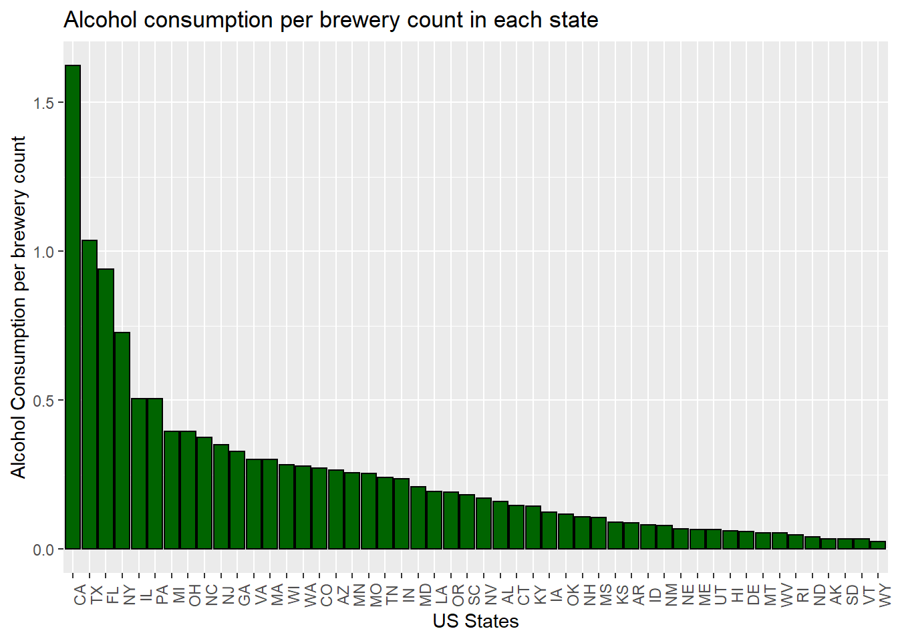
order1=ac_pc_pb%>%summarise(ac_pc_pb=ac_pc_pb$Gallons/n())
order1## ac_pc_pb
## 1 0.034
## 2 0.160
## 3 0.088
## 4 0.266
## 5 1.624
## 6 0.272
## 7 0.146
## 8 0.058
## 9 0.940
## 10 0.328
## 11 0.062
## 12 0.124
## 13 0.082
## 14 0.504
## 15 0.236
## 16 0.090
## 17 0.144
## 18 0.194
## 19 0.300
## 20 0.208
## 21 0.066
## 22 0.394
## 23 0.256
## 24 0.254
## 25 0.106
## 26 0.054
## 27 0.374
## 28 0.040
## 29 0.068
## 30 0.108
## 31 0.350
## 32 0.078
## 33 0.170
## 34 0.726
## 35 0.394
## 36 0.118
## 37 0.192
## 38 0.504
## 39 0.048
## 40 0.182
## 41 0.034
## 42 0.240
## 43 1.036
## 44 0.066
## 45 0.302
## 46 0.034
## 47 0.278
## 48 0.284
## 49 0.054
## 50 0.026sort1=sort(order1$ac_pc_pb, decreasing = TRUE)
sort1## [1] 1.624 1.036 0.940 0.726 0.504 0.504 0.394 0.394 0.374 0.350 0.328 0.302 0.300 0.284 0.278 0.272 0.266 0.256 0.254 0.240 0.236 0.208 0.194
## [24] 0.192 0.182 0.170 0.160 0.146 0.144 0.124 0.118 0.108 0.106 0.090 0.088 0.082 0.078 0.068 0.066 0.066 0.062 0.058 0.054 0.054 0.048 0.040
## [47] 0.034 0.034 0.034 0.026summary(sort1)## Min. 1st Qu. Median Mean 3rd Qu. Max.
## 0.0260 0.0705 0.1760 0.2539 0.2960 1.6240#heatmap
lookup = data.frame(abb = state.abb, State = state.name) #make a dataframe of state names and abbreviations
colnames(ac_pc_pb2)[1] = "abb"
alcohol_cons2$abb <- trimws(alcohol_cons2$abb, which = c("both"))
ac_pc_pb3 = merge(ac_pc_pb2, lookup, by = "abb") #merge datasets
ac_pc_pb3$region <- tolower(ac_pc_pb3$State) #create "region" column
ac_pc_pb3 = ac_pc_pb3 %>% select(abb, ac_pc_pb, region)
states <- map_data("state")
map.df <- merge(states, ac_pc_pb3, by = "region", all.x = T)
map.df <- map.df[order(map.df$order),] #sort the data
ggplot(map.df, aes(x=long, y=lat, group=group)) +
geom_polygon(aes(fill=ac_pc_pb)) + geom_path() +
scale_fill_gradientn(colours=rev(hcl.colors(10, palette = "Emrld")),na.value="grey90") +
ggtitle("Total alcohol consumption per brewery count in each state") +labs(x="Longitude", y="Latitude") +
coord_map()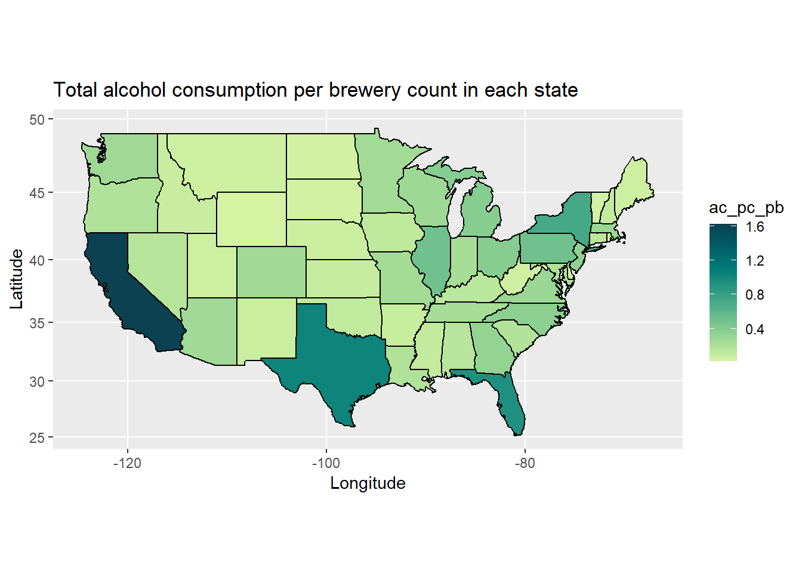
total_gallons=sum(alcohol_cons2$Gallons)
total_gallons## [1] 634.8top5=sort(alcohol_cons2$Gallons, decreasing = TRUE)
top5_df=as.data.frame(top5)
top5_data=top5_df%>%top_n(5)## Selecting by top5top5_data## top5
## 1 81.2
## 2 51.8
## 3 47.0
## 4 36.3
## 5 25.2
## 6 25.2total_top5=(sum(top5_data)/total_gallons)*100
total_top5## [1] 42.01323bottom5=sort(alcohol_cons2$Gallons, decreasing = TRUE)
bottom5## [1] 81.2 51.8 47.0 36.3 25.2 25.2 19.7 19.7 18.7 17.5 16.4 15.1 15.0 14.2 13.9 13.6 13.3 12.8 12.7 12.0 11.8 10.4 9.7 9.6 9.1 8.5 8.0
## [28] 7.3 7.2 6.2 5.9 5.4 5.3 4.5 4.4 4.1 3.9 3.4 3.3 3.3 3.1 2.9 2.7 2.7 2.4 2.0 1.7 1.7 1.7 1.3bottom5_df=as.data.frame(bottom5)
bottom5_data=bottom5_df%>%top_n(-5)## Selecting by bottom5bottom5_data## bottom5
## 1 2.0
## 2 1.7
## 3 1.7
## 4 1.7
## 5 1.3total_bottom5=(sum(bottom5_data)/total_gallons)*100
total_bottom5## [1] 1.323251!!!Conclusion
!!!Further studies and recommendations
1)Review various sales data on top craft beers. 2)Review the brewery and alcohol laws for the state.